CosMx healthy human liver sample
Melody Jin
2026-02-18
library(jazzPanda)
library(SpatialExperiment)
library(Seurat)
library(ggplot2)
library(data.table)
library(dplyr)
library(tidyr)
library(glmnet)
library(caret)
library(ComplexUpset)
library(ggrepel)
library(gridExtra)
library(patchwork)
library(RColorBrewer)
library(limma)
library(here)
library(data.table)
library(xtable)
library(corrplot)
source(here("code/utils.R"))Load data
This section loads the provided Seurat object and extracts per-cell metadata and transcript coordinates. We remove low-quality cells using QC flags, convert imaging pixel coordinates to millimetres per-field-of-view (FOV), and build a transcript-level table restricted to the healthy liver sample (slide_ID_numeric = 1). The coordinates are scaled to micrometres for plotting.
Load cell and transcript
data_nm <- "cosmx_hhliver"
seu <- readRDS(file.path(rdata$cosmx_data, "LiverDataReleaseSeurat_newUMAP.RDS"))
# local cell metadata
metadata <- as.data.frame(seu@meta.data)
## remove low quality cells
qc_cols <- c("qcFlagsRNACounts", "qcFlagsCellCounts", "qcFlagsCellPropNeg",
"qcFlagsCellComplex", "qcFlagsCellArea","qcFlagsFOV")
metadata <- metadata[!apply(metadata[, qc_cols], 1, function(x) any(x == "Fail")), ]
cell_info_cols = c("x_FOV_px", "y_FOV_px", "x_slide_mm", "y_slide_mm",
"nCount_negprobes","nFeature_negprobes","nCount_falsecode",
"nFeature_falsecode","slide_ID_numeric", "Run_Tissue_name",
"fov","cellType","niche","cell_id")
cellCoords <- metadata[, cell_info_cols]
# keep cancer tissue only
liver_normal = cellCoords[cellCoords$slide_ID_numeric==1 ,]
# load count matrix
counts <-seu[["RNA"]]@counts
normal_cells = row.names(liver_normal)
counts_normal_sample = counts[, normal_cells]
dim(counts_normal_sample)[1] 1000 332784px_to_mm <- function(data){
all_fv = unique(data$fov)
parm_df = as.data.frame(matrix(0, ncol=5, nrow=length(all_fv)))
colnames(parm_df) = c("fov","y_slope","y_intcp","x_slope","x_intcp")
parm_df$fov = all_fv
for (fv in all_fv){
curr_fov = data[data$fov == fv, ]
curr_fov = curr_fov[order(curr_fov$x_FOV_px), ]
curr_fov = curr_fov[c(1, nrow(curr_fov)), ]
curr_fov = curr_fov[c(1,2),c("y_slide_mm","x_slide_mm","y_FOV_px","x_FOV_px") ]
# mm to px for y
y_slope = (curr_fov[2,"y_slide_mm"] - curr_fov[1,"y_slide_mm"]) / (curr_fov[2,"y_FOV_px"] - curr_fov[1,"y_FOV_px"])
y_intcp = curr_fov[2,"y_slide_mm"]- (y_slope*curr_fov[2,"y_FOV_px"])
# mm to px for x
x_slope = (curr_fov[2,"x_slide_mm"] - curr_fov[1,"x_slide_mm"]) / (curr_fov[2,"x_FOV_px"] - curr_fov[1,"x_FOV_px"])
x_intcp = curr_fov[2,"x_slide_mm"]- (x_slope*curr_fov[2,"x_FOV_px"])
parm_df[parm_df$fov==fv,"y_slope"] = y_slope
parm_df[parm_df$fov==fv,"y_intcp"] = y_intcp
parm_df[parm_df$fov==fv,"x_slope"] = x_slope
parm_df[parm_df$fov==fv,"x_intcp"] = x_intcp
}
return (parm_df)
}
# number of cells per fov
# fov 21 contains 1 cell only
fov_summary = as.data.frame(table(cellCoords[cellCoords$slide_ID_numeric==1,"fov"]))
# caculate the slope and intercept parameters for each fov
parm_df = px_to_mm(liver_normal)
# convert px to mm for eeach cell based on the calculated params
liver_normal <- liver_normal %>%
left_join(parm_df, by = 'fov') %>%
mutate(
x_mm = x_FOV_px * x_slope + x_intcp,
y_mm = y_FOV_px * y_slope + y_intcp
) %>%
select(-x_slope, -y_slope, -x_intcp, -y_intcp)
transcriptCoords <-seu@misc$transcriptCoords
all_transcripts_normal <- transcriptCoords[transcriptCoords$slideID == 1,]
all_transcripts_normal <- all_transcripts_normal[all_transcripts_normal$cell_id %in% liver_normal$cell_id, ]
rm(transcriptCoords)
all_transcripts_normal <- all_transcripts_normal %>%
left_join(parm_df, by = 'fov') %>%
mutate(
x_mm = x_FOV_px * x_slope + x_intcp,
y_mm = y_FOV_px * y_slope + y_intcp
) %>%
select(-x_slope, -y_slope, -x_intcp, -y_intcp)
all_transcripts_normal$x = all_transcripts_normal$x_mm
all_transcripts_normal$y = all_transcripts_normal$y_mm
all_transcripts_normal$feature_name = all_transcripts_normal$target
hl_normal = all_transcripts_normal[,c("x","y","feature_name")]
all_genes = row.names(seu[["RNA"]]@counts)
rm(all_transcripts_normal, seu)
hl_normal$x = hl_normal$x * 1000
hl_normal$y = hl_normal$y * 1000Quality assessment of negative controls
Negative probe
To evaluate nonspecific hybridization and potential technical artefacts, we examined the distribution of negative control probes (NegPrb*) across the dataset. These probes are not expected to hybridize with endogenous transcripts. Uniform low-level detection indicates well-controlled chemistry and minimal background noise.
The bar plot summarizes total counts per negative probe, highlighting that a few probes (e.g. NegPrb11, NegPrb21) have slightly higher detection rates but remain within acceptable range (<25k counts).
negprobes_coords <- hl_normal[grepl("^NegPrb", hl_normal$feature_name), ]
nc_tb = as.data.frame(sort(table(negprobes_coords$feature_name),
decreasing = TRUE))
colnames(nc_tb) = c("name","value_count")
negprobes_coords$feature_name =factor(negprobes_coords$feature_name,
levels = nc_tb$name)
p<-ggplot(nc_tb, aes(x = name, y = value_count)) +
geom_bar(stat = "identity", color="white") +
geom_text(aes(label = value_count), vjust = -0.5, size = 3) +
scale_y_continuous(expand = c(0,1), limits = c(0, 22000))+
labs(title = " ", x = " ", y = "Number of total detections") +
theme_bw()+
theme(legend.position = "none",strip.background = element_rect(fill="white"),
strip.text = element_text(size=8),
axis.text.x= element_text(size=8,vjust=0.5,hjust = 0.5),
axis.title.y =element_text(size=8),
axis.ticks=element_blank(),
axis.title.x=element_blank(),
panel.background=element_blank(),
panel.grid.minor=element_blank(),
plot.background=element_blank())
print(p)
The corresponding spatial heatmap shows a largely uniform distribution of detections across the tissue section, confirming the absence of structured artefacts such as region-specific hybridization bias or edge effects.
p<-ggplot(negprobes_coords, aes(x=x, y=y))+
geom_hex(bins=auto_hex_bin(n=nrow(negprobes_coords)))+
#geom_point(size=0.001)+
theme_bw()+
ggtitle("Negprobes detections")+
scale_fill_gradient(low="white", high="maroon4") +
#facet_wrap(~feature_name, ncol=5)+
defined_theme+
theme(legend.position = "top",
plot.title = element_text(size=rel(1.3)),
strip.text = element_text(size=9))
print(p)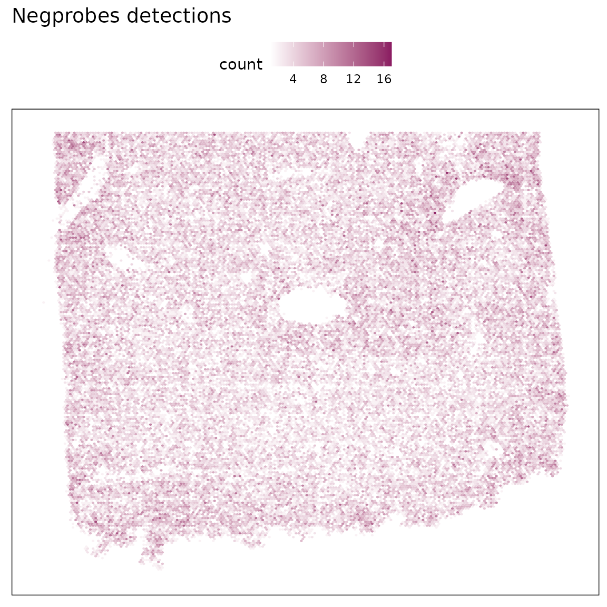
Falsecode probes
False-code probes are barcode sequences that do not match any real probes in the assay, serving as an estimate of background fluorescence and nonspecific binding. We visualized both the total detection counts per probe and their spatial distribution.
Most false-code probes show generally low total detections (<10,000 counts), and a small subset shows moderately elevated counts. Their spatial pattern remains diffuse and not correlated with tissue morphology.
falsecode_coords <- hl_normal[grepl("^FalseCode", hl_normal$feature_name), ]
fc_tb = as.data.frame(sort(table(falsecode_coords$feature_name), decreasing = TRUE))
colnames(fc_tb) = c("name","value_count")
fc_tb$cate = "total detection<1426"
fc_tb[fc_tb$value_count> 1426,"cate"] = "total detection>=1426"
fc_tb$cate=factor(fc_tb$cate,
levels=c("total detection<1426", "total detection>=1426"))
falsecode_coords$feature_name =factor(falsecode_coords$feature_name,
levels = fc_tb$name)
fc_tb$name = factor(fc_tb$name)
p<-ggplot(fc_tb, aes(x = name, y = value_count)) +
geom_bar(stat = "identity",position = position_dodge(width = 0.9), color="white") +
facet_wrap(~cate, ncol=1, scales = "free")+
scale_y_continuous(expand = c(0,2))+
labs(title = " ", x = " ", y = "Number of total detections") +
theme_bw()+
theme(legend.position = "none",strip.background = element_rect(fill="white"),
strip.text = element_text(size=12),
axis.text.x= element_text(size=9, angle=90,vjust=0.5,hjust = 1),
axis.title.y =element_text(size=12),
axis.ticks=element_blank(),
axis.title.x=element_blank(),
panel.background=element_blank(),
panel.grid.minor=element_blank(),
plot.background=element_blank())
print(p)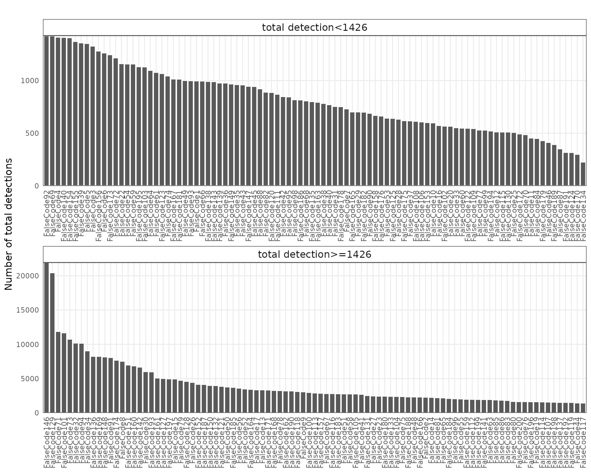
ggplot(falsecode_coords,
aes(x=x, y=y))+
geom_hex(bins=auto_hex_bin(nrow(falsecode_coords)))+
scale_fill_gradient(low="white", high="maroon4") +
theme_bw()+
ggtitle("Falsecode detections")+
defined_theme+
theme(legend.position = "top",
plot.title = element_text(size=rel(1.3))
)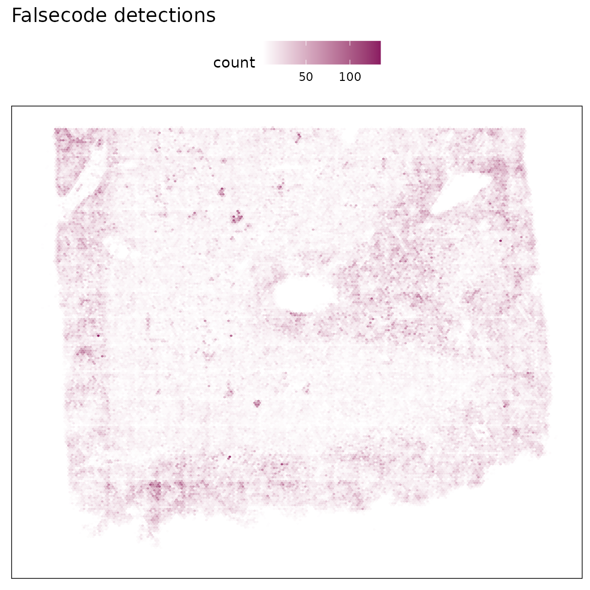
Single cell summary
These summary plots characterise per-cell detection counts and sparsity. We can calculate per-cell and per-gene summary statistics from the CosMx counts matrix:
Total detections per cell: sums all transcript counts in each cell.
Proportion of zeroes per cell: fraction of genes not detected in each cell.
Detected genes per cell: number of non-zero genes per cell.
Average expression per gene: mean expression across cells, ignoring zeros.
Each distribution is visualised with histograms and density curves to assess data quality and sparsity.
td_r1 <- colSums(counts_normal_sample)
pz_r1 <-colMeans(counts_normal_sample==0)
numgene_r1 <- colSums(counts_normal_sample!=0)
# Build the entire summary as one string
output <- paste0(
"\n================= Summary Statistics =================\n\n",
"--- CosMx human healthy liver sample---\n",
make_sc_summary(td_r1, "Total detections per cell:"),
make_sc_summary(pz_r1, "Proportion of zeroes per cell:"),
make_sc_summary(numgene_r1, "Detected genes per cell:"),
"\n========================================================\n"
)
cat(output)
================= Summary Statistics =================
--- CosMx human healthy liver sample---
Total detections per cell:
Min: 20.0000 | 1Q: 201.0000 | Median: 437.0000 | Mean: 555.4543 | 3Q: 782.0000 | Max: 5893.0000
Proportion of zeroes per cell:
Min: 0.5510 | 1Q: 0.8200 | Median: 0.8640 | Mean: 0.8628 | 3Q: 0.9090 | Max: 0.9960
Detected genes per cell:
Min: 4.0000 | 1Q: 91.0000 | Median: 136.0000 | Mean: 137.1666 | 3Q: 180.0000 | Max: 449.0000
========================================================td_df = as.data.frame(cbind(as.vector(td_r1),
rep("hliver_heathy", length(td_r1))))
colnames(td_df) = c("td","sample")
td_df$td= as.numeric(td_df$td)
p1<-ggplot(data = td_df, aes(x = td, color=sample)) +
geom_histogram(aes(y = after_stat(density)),
binwidth = 100, fill = "gray", color = "black") +
geom_density(color = "steelblue", size = 2) +
labs(title = "Distribution of total detections per cell",
x = " ", y = "Density") +
theme_minimal() +
theme(plot.title = element_text(hjust = 0.5),
strip.text = element_text(size=12))
pz = as.data.frame(cbind(as.vector(pz_r1),rep("hliver_heathy", length(pz_r1))))
colnames(pz) = c("prop_ze","sample")
pz$prop_ze= as.numeric(pz$prop_ze)
p2<-ggplot(data = pz, aes(x = prop_ze)) +
geom_histogram(aes(y = after_stat(density)),
binwidth = 0.05, fill = "gray", color = "black") +
geom_density(color = "steelblue", size = 2) +
labs(title = "Distribution of proportion of zeroes per cell",
x = " ", y = "Density") +
theme_minimal() +
theme(plot.title = element_text(hjust = 0.5),
strip.text = element_text(size=12))
numgens = as.data.frame(cbind(as.vector(numgene_r1),rep("hliver_heathy", length(numgene_r1))))
colnames(numgens) = c("numgen","sample")
numgens$numgen= as.numeric(numgens$numgen)
p3<-ggplot(data = numgens, aes(x = numgen)) +
geom_histogram(aes(y = after_stat(density)),
binwidth = 20, fill = "gray", color = "black") +
geom_density(color = "steelblue", size = 2) +
labs(title = "Distribution of detected genes per cell",
x = " ", y = "Density") +
theme_minimal() +
theme(plot.title = element_text(hjust = 0.5),
strip.text = element_text(size=12))cm_new1=counts_normal_sample
cm_new1[cm_new1==0] = NA
cm_new1 = as.data.frame(cm_new1)
cm_new1$avg2 = rowMeans(cm_new1,na.rm = TRUE)
summary(cm_new1$avg2) Min. 1st Qu. Median Mean 3rd Qu. Max.
1.02 1.06 1.09 1.61 1.20 76.60 avg_exp = as.data.frame(cbind("avg"=cm_new1$avg2,
"sample"=rep("hliver_heathy", nrow(cm_new1))))
avg_exp$avg=as.numeric(avg_exp$avg)
p4<-ggplot(data = avg_exp, aes(x = avg, color=sample)) +
geom_histogram(aes(y = after_stat(density)),
binwidth = 0.5, fill = "gray", color = "black") +
geom_density(color = "orange", linewidth = 1) +
labs(title = "Distribution of average gene expression per cell",
x = " ", y = "Density") +
theme_minimal() +
theme(plot.title = element_text(hjust = 0.5),
strip.text = element_text(size=12))
layout_design <- (p1|p2)/(p3|p4)
print(layout_design)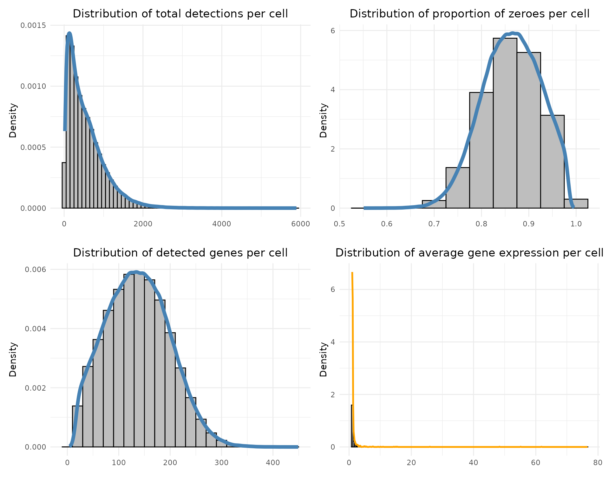
The distribution of total detections per cell is skewed toward low counts with a long tail. The proportion of zero counts per cell is centered around 0.8–0.9 and the number of detected genes per cell shows a bell-shaped distribution peaking around 100–150 genes. Finally, average gene expression per gene is strongly right-skewed, with most genes detected at very low levels in only a subset of cells, while a small number of highly expressed genes dominate the expression landscape.
Refine clustering
Here we create a merged ‘cluster’ annotation by collapsing similar
cell types into broader groups (e.g. merging B cell subtypes). The
output cluster_info is used for spatial plotting and later
marker summaries.
selected_cols = c("x_FOV_px", "y_FOV_px","x_slide_mm", "y_slide_mm",
"slide_ID_numeric", "Run_Tissue_name", "fov","cellType",
"niche","cell_id" )
cluster_info = liver_normal[,selected_cols ]
colnames(cluster_info) =c("x_FOV_px","y_FOV_px" , "x", "y",
"slide_ID_numeric", "Run_Tissue_name", "fov",
"cellTypes","niche","cell_id")
cluster_info$cluster = as.character(cluster_info$cellTypes)
cluster_info[cluster_info$cellTypes %in% c("Antibody.secreting.B.cells", "Mature.B.cells"),"cluster"] = "B"
cluster_info[cluster_info$cellTypes %in% c("CD3+.alpha.beta.T.cells", "gamma.delta.T.cells.1"),"cluster"] = "T"
cluster_info[cluster_info$cellTypes %in% c("Non.inflammatory.macrophages", "Inflammatory.macrophages"),"cluster"] = "Macrophages"
ig_clusters = c("NotDet")
cluster_info = cluster_info[cluster_info$cluster != "NotDet",]
cluster_info$cluster = factor(cluster_info$cluster)
cluster_info$sample = "normal"
# dim = 332873 11
cluster_info = cluster_info[!duplicated(cluster_info[,c("x","y")]),]
cluster_info$x = cluster_info$x * 1000
cluster_info$y = cluster_info$y * 1000
saveRDS(cluster_info, here(gdata,paste0(data_nm, "_clusters.Rds")))# load generated data (see code above for how they were created)
cluster_info = readRDS(here(gdata,paste0(data_nm, "_clusters.Rds")))
cluster_info$anno_name = cluster_info$cluster
cluster_names = c( "B", "Central.venous.LSECs", "Cholangiocytes", "Erthyroid.cells",
"Hep.1", "Hep.3", "Hep.4", "Hep.5", "Hep.6", "Macrophages",
"NK.like.cells", "Periportal.LSECs", "Portal.endothelial.cells",
"Stellate.cells", "T")
cluster_info$cluster = factor(cluster_info$cluster,
levels=cluster_names)
cluster_info$anno_name = factor(cluster_info$anno_name,
levels=cluster_names)
cluster_info = cluster_info[order(cluster_info$anno_name), ]
fig_ratio = cluster_info %>%
group_by(sample) %>%
summarise(
x_range = diff(range(x, na.rm = TRUE)),
y_range = diff(range(y, na.rm = TRUE)),
ratio = y_range / x_range,
.groups = "drop"
) %>% summarise(max_ratio = max(ratio)) %>% pull(max_ratio)Whole-sample view of the healthy liver sample, colored by cluster. The tissue architecture is well preserved, with major parenchymal, endothelial, and immune compartments visible.
ggplot(data = cluster_info,
aes(x = x, y = y, color=cluster))+
geom_point(size=0.0001)+
facet_wrap(~sample)+
theme_classic()+
guides(color=guide_legend(title="", nrow = 4,
override.aes=list(alpha=1, size=4)))+
defined_theme+
theme(aspect.ratio = fig_ratio,
legend.position = "bottom",
strip.text = element_blank())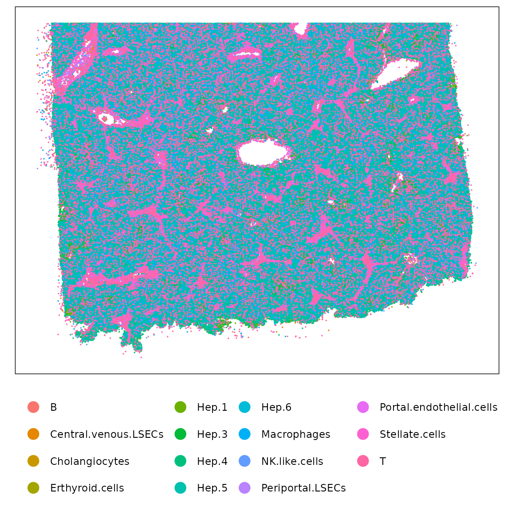
Cluster-specific views showing that most clusters are spatially separable. Hepatocyte subclusters form zonated domains, endothelial subsets localize to distinct vascular regions (central vs. periportal), and immune populations show dispersed but niche-specific patterns. Overall, the clustering reflects biologically meaningful spatial segregation consistent with known liver organization.
p<-ggplot(data = cluster_info,
aes(x = x, y = y))+
geom_point(size=0.0001)+
facet_wrap(~cluster, nrow=3)+
theme_classic()+
guides(color=guide_legend(title="",override.aes=list(alpha=1, size=8)))+
defined_theme+
theme(legend.position = "right",
aspect.ratio = fig_ratio,
strip.text = element_text(size=12))
print(p)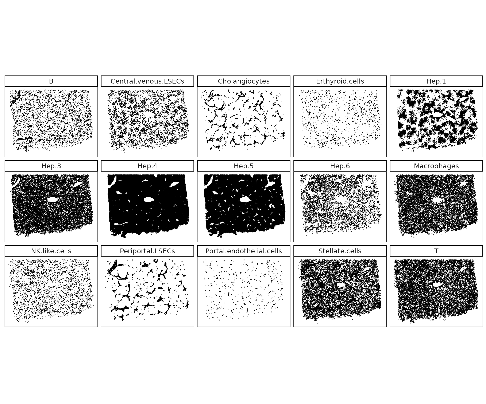
We plot the number of cells assigned to each annotated cluster in the healthy liver sample. Hepatocytes make up the majority of cells, with subclusters Hep.3–5 being particularly abundant, reflecting the parenchymal dominance of the tissue. Non-parenchymal compartments such as endothelial subsets, cholangiocytes, stellate cells, and immune populations are also well represented, highlighting the expected complexity of the liver microenvironment. Overall, the composition aligns with known liver biology and supports the validity of the cluster assignments observed in the spatial maps.
sum_df <- as.data.frame(table(cluster_info$anno_name))
colnames(sum_df) = c("cellType","n")
p<-ggplot(sum_df, aes(x = cellType, y = n, fill=n)) +
geom_bar(stat = "identity", position="stack", fill="black") +
geom_text(aes(label = n),size=3,
position = position_dodge(width = 0.9), vjust = -0.5) +
scale_y_continuous(expand = c(0,1), limits=c(0,150000))+
labs(title = " ", x = " ", y = "number of cells", fill="cell type") +
theme_bw()+
theme(legend.position = "none",
axis.text= element_text(size=12, angle=90,vjust=0.5,hjust = 1),
strip.text = element_text(size = rel(1.1)),
axis.line=element_blank(),
axis.text.y=element_blank(),axis.ticks=element_blank(),
axis.title=element_text(size=8),
panel.background=element_blank(),
panel.grid.major=element_blank(),
panel.grid.minor=element_blank(),
plot.background=element_blank())
print(p)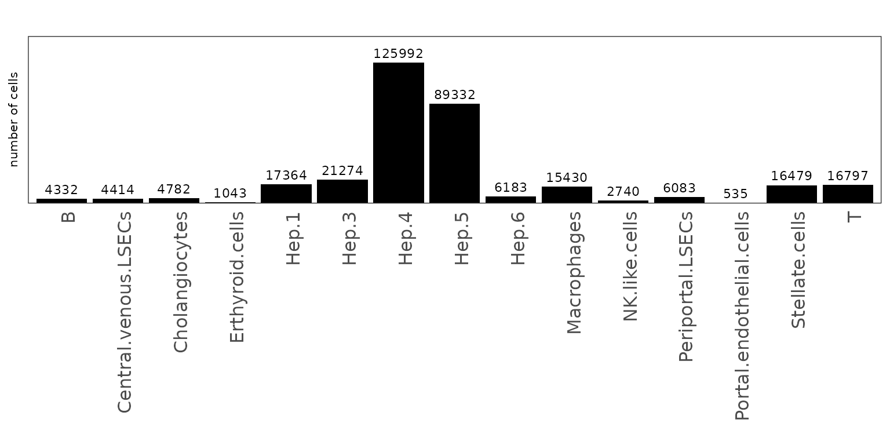
Detect marker genes
jazzPanda
We applied jazzPanda to the healthy liver dataset using both the linear modelling and correlation-based approaches to detect spatially enriched marker genes across clusters.
Linear modelling approach
We first used the linear modelling approach to identify spatially enriched marker genes. The dataset was converted into spatial gene and cluster vectors using a 40 × 40 square binning strategy. False-code and negative-probe transcripts were included as background controls. For each gene, a linear model was fitted to estimate its spatial association with relevant cell type patterns.
seed_number=589
grid_length = 40
hliver_vector_lst = get_vectors(x=list("normal"=hl_normal),
sample_names = "normal",
cluster_info = cluster_info,
bin_type="square",
bin_param=c(grid_length, grid_length),
test_genes = row.names(counts_normal_sample),
n_cores = 5)
falsecode_coords$sample = "normal"
negprobes_coords$sample = "normal"
kpt_cols = c("x","y","feature_name","sample")
nc_coords = rbind(falsecode_coords[,kpt_cols],negprobes_coords[,kpt_cols])
falsecode_names = unique(falsecode_coords$feature_name)
negprobe_names = unique(negprobes_coords$feature_name)
nc_vectors = create_genesets(x=list("normal"=nc_coords),
sample_names = "normal",
name_lst=list(falsecode=falsecode_names,
negprobe=negprobe_names),
bin_type="square",
bin_param=c(grid_length, grid_length),
cluster_info=NULL)
set.seed(seed_number)
jazzPanda_res_lst = lasso_markers(gene_mt=hliver_vector_lst$gene_mt,
cluster_mt = hliver_vector_lst$cluster_mt,
sample_names=c("normal"),
keep_positive=TRUE,
background=nc_vectors,
n_fold = 10)
saveRDS(hliver_vector_lst, here(gdata,paste0(data_nm, "_sq40_vector_lst.Rds")))
saveRDS(jazzPanda_res_lst, here(gdata,paste0(data_nm, "_jazzPanda_res_lst.Rds")))We then used get_top_mg to extract unique marker genes
for each cluster based on a coefficient cutoff of 0.1. This function
returns the top spatially enriched genes that are most specific to each
cluster. In contrast, if shared marker genes across clusters are of
interest, all significant genes can be retrieved using
get_full_mg.
# load from saved objects
jazzPanda_res_lst = readRDS(here(gdata,paste0(data_nm, "_jazzPanda_res_lst.Rds")))
sv_lst = readRDS(here(gdata,paste0(data_nm, "_sq40_vector_lst.Rds")))
nbins = 1600
jazzPanda_res = get_top_mg(jazzPanda_res_lst, coef_cutoff=0.1)
seu = readRDS(here(gdata,paste0(data_nm, "_seu.Rds")))
seu <- subset(seu, cells = cluster_info$cell_id)
Idents(seu)=cluster_info$anno_name[match(colnames(seu), cluster_info$cell_id)]
seu$sample = cluster_info$sample[match(colnames(seu), cluster_info$cell_id)]
Idents(seu) = factor(Idents(seu), levels = cluster_names)
head(jazzPanda_res) gene top_cluster glm_coef pearson max_gg_corr max_gc_corr
AATK AATK NoSig 0.000 0.000 0.855 0.847
ABL1 ABL1 NoSig 0.000 0.000 0.881 0.854
ABL2 ABL2 NoSig 0.000 0.000 0.891 0.866
ACACB ACACB Hep.4 0.528 0.821 0.958 0.877
ACE ACE NoSig 0.000 0.000 0.820 0.827
ACKR1 ACKR1 NoSig 0.000 0.000 0.795 0.800Cluster to cluster correlation
We computed pairwise Pearson correlations between spatial cluster vectors to assess relationships among cell type distributions. The resulting heatmap shows generally low to moderate correlations, indicating that most clusters occupy distinct spatial domains. Higher correlations among hepatocyte subclusters (Hep.3–6) reflect their zonated and partially overlapping spatial organization, while endothelial and immune cell types remain largely distinct. This supports the spatial separability observed in the earlier maps.
cluster_mtt = sv_lst$cluster_mt
cluster_mtt = cluster_mtt[,cluster_names]
cor_M_cluster = cor(cluster_mtt,cluster_mtt,method = "pearson")
col <- colorRampPalette(c("#4477AA", "#77AADD", "#FFFFFF","#EE9988", "#BB4444"))
corrplot(
cor_M_cluster,
method = "color",
col = col(200),
diag = TRUE,
addCoef.col = "black",
type = "upper",
tl.col = "black",
tl.cex = 0.6,
number.cex = 0.8,
tl.srt = 45,
mar = c(0, 0, 3, 0),
sig.level = 0.05,
insig = "blank",
title = "cluster–cluster correlation",
cex.main = 1.2
)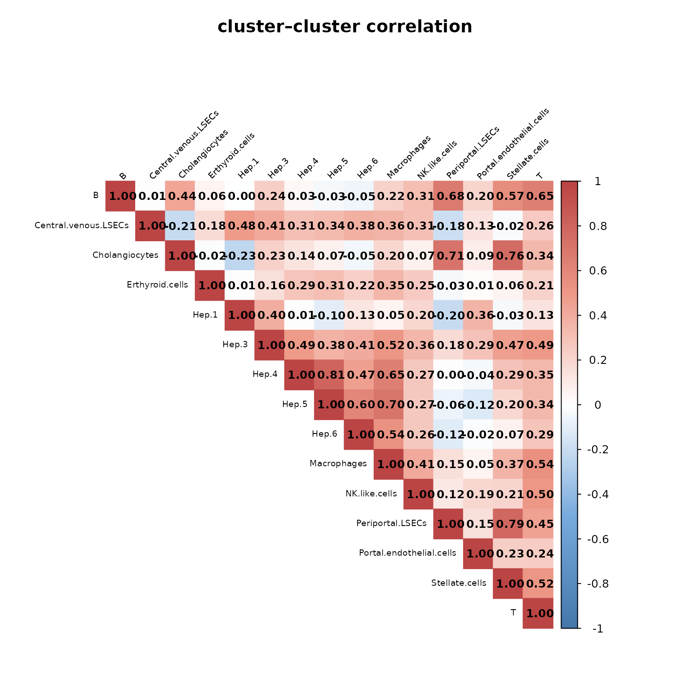
We can plot the top 10 spatial marker genes per cluster identified by the linear modelling approach. The resulting markers are biologically consistent with known healthy liver cell identities. Hepatocyte subclusters (Hep.3–6) show strong expression of canonical metabolic genes such as APOC1, APOA1, SERPINA1, and FASN, reflecting zonated hepatocyte function. DCN, BGN, and IGFBP7 mark hepatic stellate cells, while CD74, LYZ, and complement components (C1QA–C1QC) define macrophages. NKG7, PRF1, and GZMH identify NK/T cell populations, and IGHG1–IGHG4 highlight B cells. Overall, the identified markers align closely with expected cell-type signatures in healthy human liver.
glm_mg = jazzPanda_res[jazzPanda_res$top_cluster != "NoSig", ]
glm_mg$top_cluster = factor(glm_mg$top_cluster, levels = cluster_names)
top_mg_glm <- glm_mg %>%
group_by(top_cluster) %>%
arrange(desc(glm_coef), .by_group = TRUE) %>%
slice_max(order_by = glm_coef, n = 10) %>%
select(top_cluster, gene, glm_coef)
p1<-DotPlot(seu, features = top_mg_glm$gene) +
scale_colour_gradient(low = "white", high = "red") +
coord_flip()+
theme(axis.text.x = element_text(angle = 45, hjust = 1, vjust = 1))+
labs(title = "Top 10 marker genes (jazzPanda-glm)", x="", y="")
p1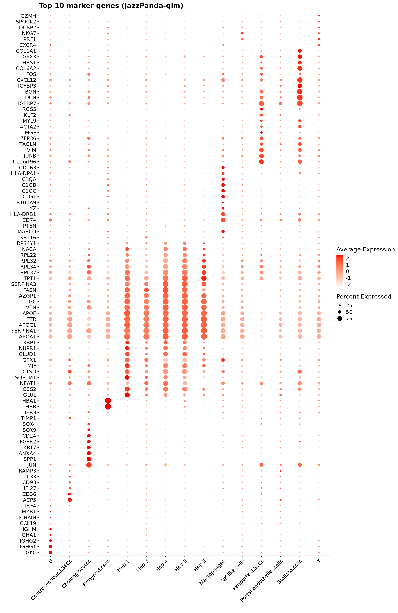
Top3 marker genes by jazzPanda_glm
We visualized the top three marker genes identified by the linear modelling approach for each cluster. For each selected gene, its spatial transcript locations were plotted alongside the corresponding cluster map. Across clusters, the spatial expression patterns of marker genes closely match the distribution of their associated cell types
jazzPanda_res = get_top_mg(jazzPanda_res_lst, coef_cutoff=0.1)
jazzPanda_summary = as.data.frame(table(jazzPanda_res$top_cluster))
colnames(jazzPanda_summary) = c("cluster","jazzPanda_glm")
for (cl in cluster_names){
inters=jazzPanda_res[jazzPanda_res$top_cluster==cl,"gene"]
rounded_val=signif(as.numeric(jazzPanda_res[inters,"glm_coef"]),
digits = 3)
inters_df = as.data.frame(cbind(gene=inters, value=rounded_val))
inters_df$value = as.numeric(inters_df$value)
inters_df=inters_df[order(inters_df$value, decreasing = TRUE),]
inters_df$text= paste(inters_df$gene,inters_df$value,sep=": ")
if (length(inters > 0)){
inters_df = inters_df[1:min(3, nrow(inters_df)),]
inters = inters_df$gene
iters_sp1= hl_normal$feature_name %in% inters
vis_r1 =hl_normal[iters_sp1,
c("x","y","feature_name")]
vis_r1$value = inters_df[match(vis_r1$feature_name,inters_df$gene),
"value"]
vis_r1=vis_r1[order(vis_r1$value,decreasing = TRUE),]
vis_r1$text_label= paste(vis_r1$feature_name,
vis_r1$value,sep=": ")
vis_r1$text_label=factor(vis_r1$text_label, levels=inters_df$text)
vis_r1 = vis_r1[order(vis_r1$text_label),]
genes_plt <- plot_top3_genes(vis_df=vis_r1, fig_ratio=fig_ratio)
cluster_data = cluster_info[cluster_info$cluster==cl, ]
cl_pt<- ggplot(data =cluster_data,
aes(x = x, y = y, color=sample))+
geom_point(size=0.01)+
facet_wrap(~anno_name, nrow=1,strip.position = "left")+
scale_color_manual(values = c("black"))+
defined_theme +
theme(legend.position = "none",
strip.background = element_blank(),
aspect.ratio = fig_ratio,
legend.key.width = unit(15, "cm"),
plot.margin = margin(0, 0, 0, 0),
strip.text = element_text(size = rel(1.3)))
layout_design <- (wrap_plots(cl_pt, ncol = 1) | genes_plt) +
plot_layout(widths = c(1, 3), heights = c(1))
print(layout_design)
}
}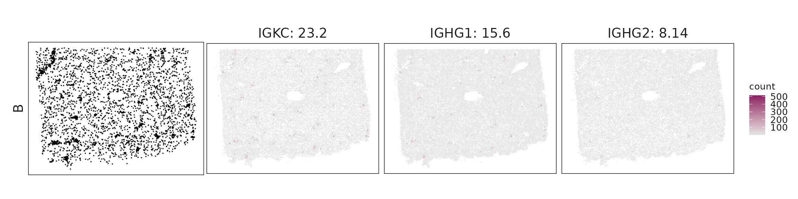 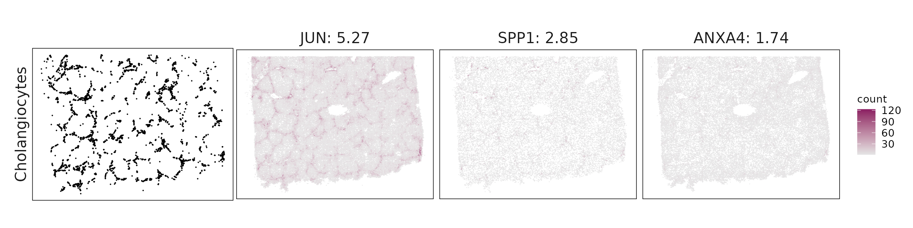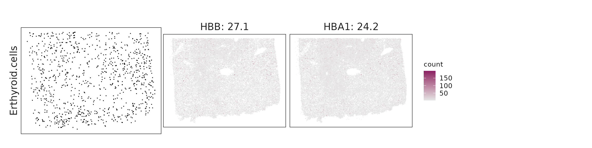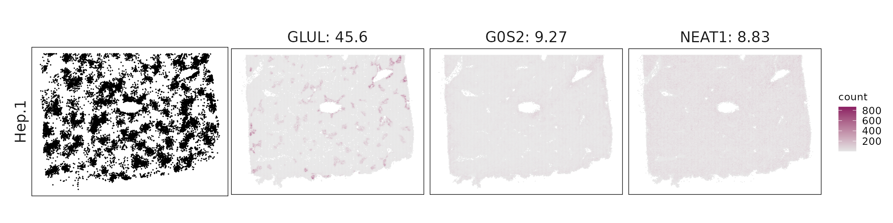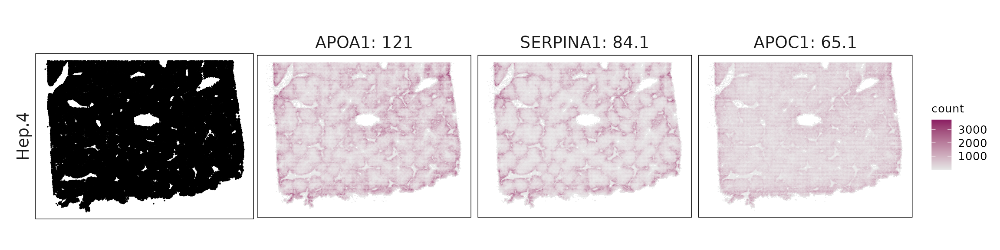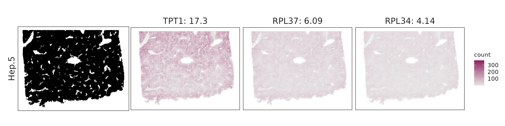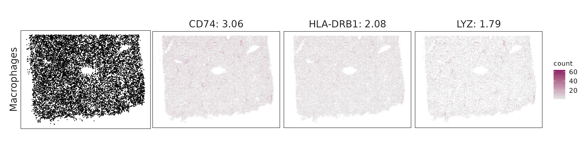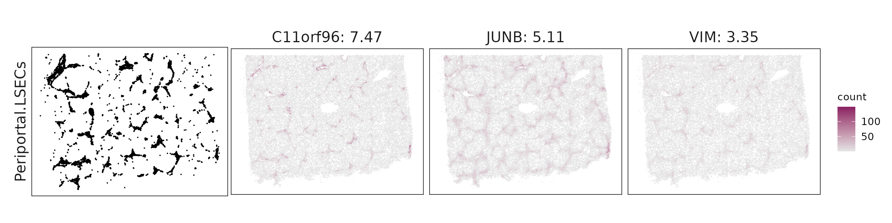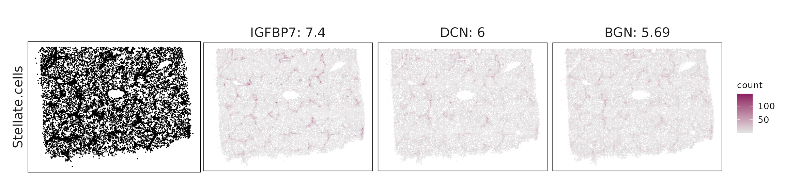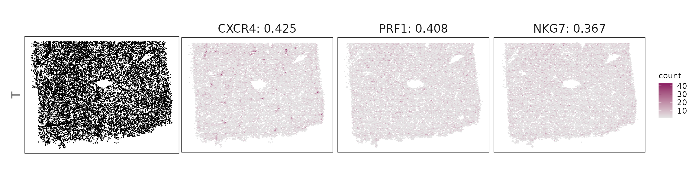
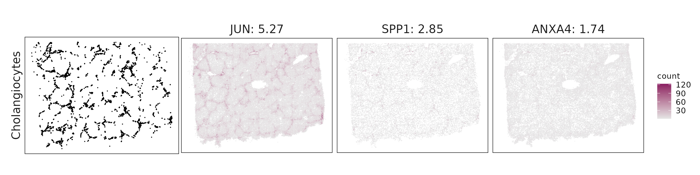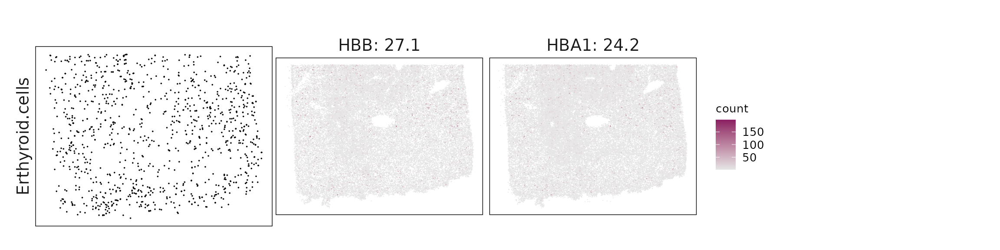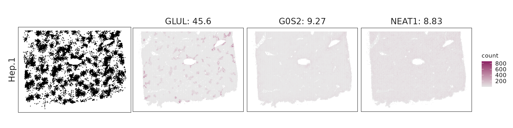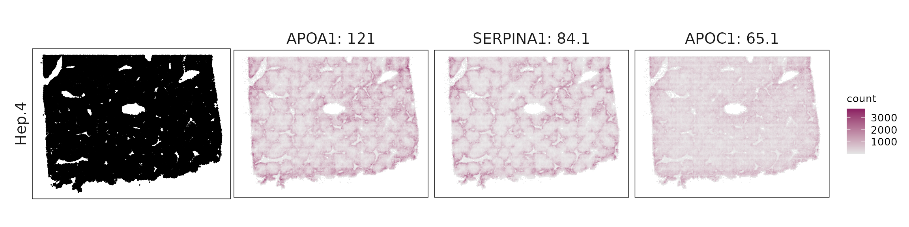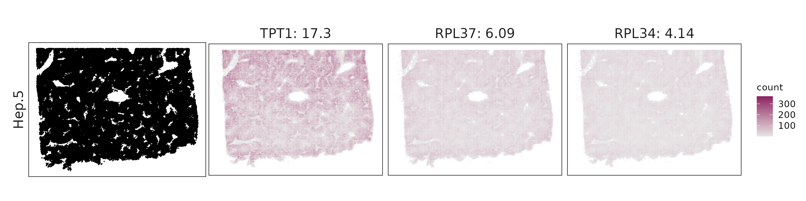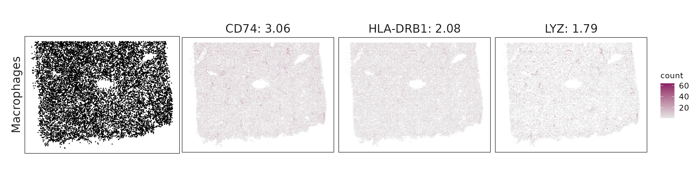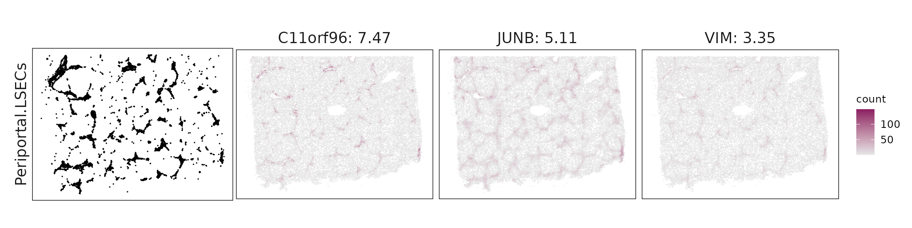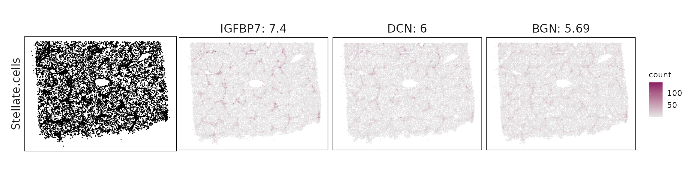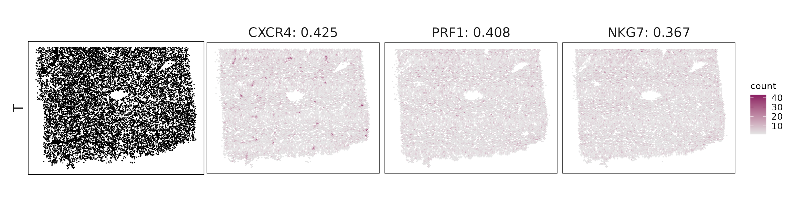
Cluster vector versus marker gene vector
We examined the relationship between each cluster vector and its top three marker gene vectors identified by the linear modelling approach. Each scatter plot compares the spatial activation strength of a marker gene with the corresponding cluster vector across spatial bins. The plots show clear linear relationships, indicating that the top marker genes identified for each cluster are strongly and proportionally associated with that cluster’s spatial domain.
plot_lst=list()
for (cl in cluster_names){
inters_df=jazzPanda_res[jazzPanda_res$top_cluster==cl,]
if (nrow(inters_df) >0){
inters_df=inters_df[order(inters_df$glm_coef, decreasing = TRUE),]
inters_df = inters_df[1:min(3, nrow(inters_df)),]
mk_genes = inters_df$gene
dff = as.data.frame(cbind(sv_lst$cluster_mt[,cl],
sv_lst$gene_mt[,mk_genes]))
colnames(dff) = c("cluster", mk_genes)
dff$vector_id = c(1:nbins)
long_df <- dff %>%
tidyr::pivot_longer(cols = -c(cluster, vector_id), names_to = "gene",
values_to = "vector_count")
long_df$gene = factor(long_df$gene, levels=mk_genes)
p<-ggplot(long_df, aes(x = cluster, y = vector_count, color=gene )) +
geom_point(size=0.01) +
facet_wrap(~gene, scales="free_y", nrow=1) +
labs(x = paste(cl, " cluster vector ", sep=""),
y = "Top3 marker gene vector") +
theme_minimal()+
scale_y_continuous(expand = c(0.01,0.01))+
scale_x_continuous(expand = c(0.01,0.01))+
theme(panel.grid = element_blank(),legend.position = "none",
strip.text = element_text(size = 12),
axis.line=element_blank(),
axis.text=element_text(size = 11),
axis.ticks=element_line(color="black"),
axis.title=element_text(size = 12),
panel.border =element_rect(colour = "black",
fill=NA, linewidth=0.5)
)
if (length(mk_genes) == 2) {
p <- (p | plot_spacer()) +
plot_layout(widths = c(2, 1))
} else if (length(mk_genes) == 1) {
p <- (p | plot_spacer() | plot_spacer()) +
plot_layout(widths = c(1, 1, 1))
}
plot_lst[[cl]] = p
}
}
combined_plot <- wrap_plots(plot_lst, ncol = 2)
combined_plot 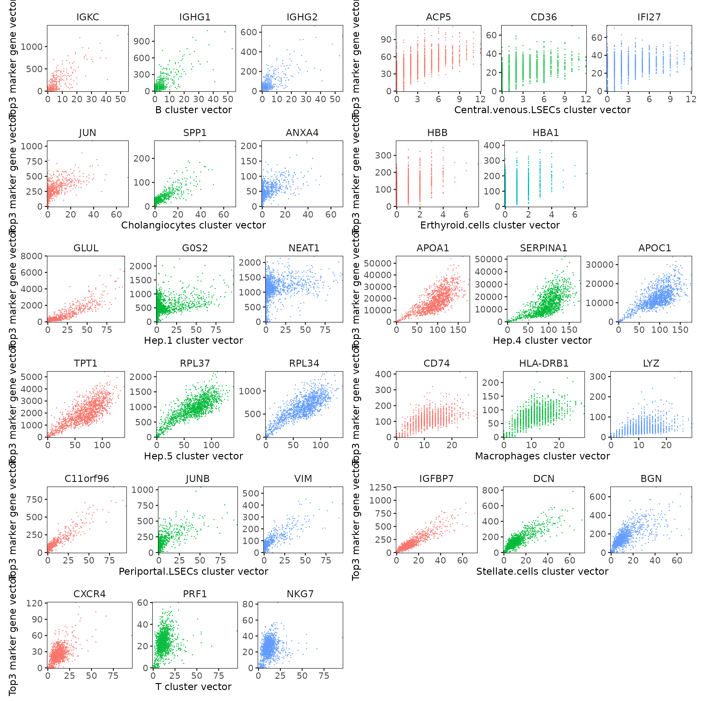
Marker gene summary per cluster
For each cluster, we summarized the detected marker genes and their corresponding strengths. We list genes with model coefficients above the defined cutoff (e.g. 0.1) for each cluster.
## linear modelling
output_data <- do.call(rbind, lapply(cluster_names, function(cl) {
subset <- jazzPanda_res[jazzPanda_res$top_cluster == cl, ]
sorted_subset <- subset[order(-subset$glm_coef), ]
if (length(sorted_subset) == 0){
return(data.frame(Cluster = cl, Genes = " "))
}
if (cl != "NoSig"){
gene_list <- paste(sorted_subset$gene, "(", round(sorted_subset$glm_coef, 2), ")", sep="", collapse=", ")
}else{
gene_list <- paste(sorted_subset$gene, "", sep="", collapse=", ")
}
return(data.frame(Cluster = cl, Genes = gene_list))
}))
knitr::kable(
output_data,
caption = "Detected marker genes for each cluster by linear modelling approach in jazzPanda, in decreasing value of glm coefficients"
)| Cluster | Genes |
|---|---|
| B | IGKC(23.19), IGHG1(15.57), IGHG2(8.14), IGHA1(5.21), IGHM(1.86), CCL19(0.64), JCHAIN(0.59), MZB1(0.4), IRF4(0.29) |
| Central.venous.LSECs | ACP5(2.57), CD36(1.33), IFI27(0.93), CD93(0.64), IL33(0.49), RAMP3(0.43) |
| Cholangiocytes | JUN(5.27), SPP1(2.85), ANXA4(1.74), KRT7(1.2), FGFR2(1.17), CD24(1.14), SOX9(0.84), SOX4(0.83), TIMP1(0.61), IER3(0.6), GSTP1(0.52), KRT19(0.38), EPCAM(0.33), TACSTD2(0.33), FZD1(0.26), SCGB3A1(0.24), CCL28(0.21), ITGB8(0.15) |
| Erthyroid.cells | HBB(27.12), HBA1(24.19) |
| Hep.1 | GLUL(45.62), G0S2(9.27), NEAT1(8.83), SQSTM1(8.81), CTSD(6.66), MIF(5.07), GPX1(4.49), GLUD1(3.93), NUPR1(3.55), XBP1(2.45), CSTB(2.05), MYL12A(1.9), LAMP2(1.68), ADIRF(1.25), IL6ST(0.97), RAMP1(0.92), CXCL14(0.89), DPP4(0.87), TNFRSF14(0.87), IL32(0.75), GDF15(0.65), TNFRSF12A(0.65), MAP1LC3B(0.65), DDIT3(0.59), FGF12(0.56), PPARA(0.55), THSD4(0.54), RORA(0.51), ATF3(0.48), CD55(0.47), AHR(0.47), SEC23A(0.39), ITGA6(0.38), YES1(0.38), H2AZ1(0.36), NR3C1(0.34), AQP3(0.33), INHBA(0.3), STAT6(0.29), BMP1(0.27), FGF2(0.27), TNFRSF10B(0.24), EPHB4(0.23), TGFBR2(0.19), IL1R1(0.19), HDAC5(0.19), PLCG1(0.18), STAT5B(0.18), TCF7(0.18), PPARG(0.17), MERTK(0.16), CYP2U1(0.16), IFIT3(0.15), PDGFB(0.15), TXK(0.14), TNFRSF10D(0.14), WNT5A(0.14), PTGIS(0.13), LGR5(0.12), CXCL9(0.11), ETV4(0.11), GAS6(0.11) |
| Hep.3 | () |
| Hep.4 | APOA1(120.95), SERPINA1(84.1), APOC1(65.1), TTR(61.51), APOE(39.05), VTN(21.34), GC(17.61), AZGP1(12.32), FASN(10.67), SERPINA3(9.53), MALAT1(8.97), CLU(8.94), INSIG1(7.34), FN1(6.5), PPIA(5.32), RARRES2(5.31), HMGCS1(4.81), HLA-A(4.28), DUSP1(4.17), SOD1(3.18), MT2A(2.95), HSPA1A(2.9), PFN1(2.85), CD81(2.8), SAA1(2.59), EIF5A(2.5), COL18A1(2.48), ITM2B(2.22), IGF2(2.07), CD14(2.01), CHI3L1(1.92), HMGN2(1.85), RPL21(1.83), IFITM3(1.74), FAU(1.73), HSP90AA1(1.67), KRT8(1.55), VEGFA(1.2), ENO1(1.19), HSPB1(1.14), MT1X(1.09), ATP5F1E(1.06), HSP90AB1(1), SLCO2B1(0.95), BTF3(0.93), CALD1(0.93), TPI1(0.9), KRT18(0.9), ST6GAL1(0.9), MZT2A(0.88), CDH1(0.84), SOD2(0.82), AR(0.76), CTNNB1(0.75), TUBB(0.74), SRSF2(0.74), CALM2(0.73), EFNA1(0.73), BST2(0.67), ZBTB16(0.66), LDLR(0.65), TNFSF10(0.64), PGK1(0.63), RAC1(0.58), ATG5(0.58), PROX1(0.57), BTG1(0.57), PTGES3(0.56), IGFBP5(0.54), COL27A1(0.54), ACACB(0.53), SREBF1(0.52), CALM1(0.52), MAF(0.49), SQLE(0.48), H4C3(0.47), RXRA(0.47), ARF1(0.46), TUBB4B(0.43), SIGIRR(0.43), IL6R(0.43), SLC40A1(0.43), BCL2L1(0.41), FKBP5(0.39), SLPI(0.39), HSD17B2(0.38), PLD3(0.37), FGFR3(0.37), CCND1(0.35), ERBB3(0.34), LTBR(0.34), NR1H3(0.33), LGALS3BP(0.33), ADGRA3(0.33), STAT3(0.33), PSD3(0.31), DDC(0.31), EGFR(0.29), TNFRSF1A(0.29), ICAM3(0.28), MAPK14(0.27), CD276(0.27), CALM3(0.27), CXCL1(0.26), NR1H2(0.25), VHL(0.25), IGF1(0.25), POU5F1(0.24), TPM1(0.23), CSK(0.23), IL1RAP(0.23), VWA1(0.23), LGALS1(0.22), EPHA2(0.22), UBE2C(0.22), IRF3(0.21), TSC22D1(0.21), BID(0.21), PDS5A(0.21), ERBB2(0.21), GPER1(0.21), AKT1(0.21), RBM47(0.2), VEGFB(0.2), IL17RB(0.19), BAG3(0.19), OSM(0.19), IFI6(0.19), PIGR(0.19), STAT1(0.18), ITGB5(0.18), ISG15(0.18), CYSTM1(0.17), MAP2K1(0.17), BAX(0.17), IFNAR2(0.17), FES(0.16), CCL15(0.16), ITGA5(0.16), WNT3(0.16), FZD5(0.15), SMAD2(0.15), HDAC3(0.15), HLA-DQB1(0.15), SERPINH1(0.15), ICOSLG(0.15), DST(0.15), SNAI1(0.14), PPARD(0.14), RXRB(0.14), MET(0.14), SMO(0.14), ACKR3(0.14), HDAC1(0.14), KRT17(0.14), MTOR(0.14), FKBP11(0.14), COL9A3(0.13), IL10RB(0.13), ACVR1B(0.13), CRP(0.13), RARA(0.13), SH3BGRL3(0.12), IL1RN(0.12), DHRS2(0.12), TYK2(0.12), ESR1(0.12), ACVR1(0.12), INHA(0.12), TNFRSF21(0.12), IL27RA(0.11), IL11RA(0.11), BBLN(0.11), CLDN4(0.11), BRAF(0.11), CX3CL1(0.11), PCNA(0.11), DDR1(0.11), NOTCH1(0.1), FFAR3(0.1), CYTOR(0.1), PTK2(0.1) |
| Hep.5 | TPT1(17.34), RPL37(6.09), RPL34(4.14), RPL32(3.55), RPL22(1.69), NACA(1.58), RPS4Y1(0.81), KRT16(0.46), MARCO(0.38), PTEN(0.24), MARCKSL1(0.19), LTB(0.15), TYROBP(0.14), CD4(0.13), CCL5(0.13), LYVE1(0.13), COTL1(0.13), BASP1(0.12), ARHGDIB(0.12), KRT86(0.12), CD44(0.12), CFD(0.11), LIFR(0.1), HLA-DPB1(0.1) |
| Hep.6 | () |
| Macrophages | CD74(3.06), HLA-DRB1(2.08), LYZ(1.79), S100A9(1.76), CD5L(1.61), C1QC(1.52), C1QB(1.51), C1QA(1.13), HLA-DPA1(0.97), CD163(0.87), S100A8(0.74), FCGR3A(0.59), HLA-DRA(0.58), MS4A6A(0.57), HLA-DQA1(0.34) |
| NK.like.cells | () |
| Periportal.LSECs | C11orf96(7.47), JUNB(5.11), VIM(3.35), TAGLN(2.85), ZFP36(2.78), MGP(1.59), ACTA2(1.57), MYL9(1.32), KLF2(1.21), RGS5(1.21), S100A6(1.16), MYH11(1.15), SPARCL1(1.12), TPM2(1.05), JAG1(1.04), TM4SF1(1.03), NOTCH3(1.02), GSN(0.95), CCL21(0.88), SRGN(0.86), CRIP1(0.82), CCL2(0.78), HSPG2(0.65), IFITM1(0.65), CD9(0.5), PECAM1(0.48), CSPG4(0.44), CD34(0.37), RGS1(0.35), CRYAB(0.34), PLAC9(0.32), NDUFA4L2(0.31), FLT1(0.28), DUSP5(0.26), EPHA3(0.22), RAMP2(0.22), EFNB2(0.16), NTRK2(0.13) |
| Portal.endothelial.cells | () |
| Stellate.cells | IGFBP7(7.4), DCN(6), BGN(5.69), IGFBP3(5.16), CXCL12(5.04), FOS(2.68), COL6A2(2.56), THBS1(1.87), GPX3(1.83), COL1A1(1.54), COL3A1(1.51), COL6A1(1.45), LUM(1.19), NGFR(1.05), PDGFRA(1.01), RGS2(0.92), COL1A2(0.89), HGF(0.86), PDGFRB(0.75), DPT(0.73), TNXB(0.69), COL6A3(0.55), COL14A1(0.55), PTGDS(0.54), THBS2(0.53), ENG(0.53), CARMN(0.5), COL4A1(0.5), ADGRE5(0.46), COL4A2(0.44), CSF1(0.42), MRC2(0.41), ITGA9(0.39), MMP2(0.37), MEG3(0.36), ADGRA2(0.33), MXRA8(0.29), PXDN(0.29), IGFBP6(0.24), NPR3(0.24), COL12A1(0.19) |
| T | CXCR4(0.42), PRF1(0.41), NKG7(0.37), DUSP2(0.33), SPOCK2(0.28), GZMH(0.25) |
Correlation approach
We next applied the correlation-based method using the same 40 × 40 binning strategy. This approach highlights genes whose spatial patterns are highly correlated with specific cell type domains.
grid_length = 40
seed_number=589
set.seed(seed_number)
perm_p = compute_permp(x=list("normal"=hl_normal),
cluster_info=cluster_info,
perm.size=5000,
bin_type="square",
bin_param=c(grid_length,grid_length),
test_genes=row.names(counts_normal_sample),
correlation_method = "spearman",
n_cores=5,
correction_method="BH")
saveRDS(perm_p, here(gdata,paste0(data_nm, "_perm_lst.Rds")))We can get the correlation between every gene and cluster using the
get_cor function, which quantifies how strongly each gene’s
spatial expression pattern aligns with the spatial distribution of each
cluster.
To assess statistical significance, permutation testing results are
retrieved from the saved perm_lst object. The corresponding raw p-values
can be obtained with get_perm_p, and the
multiple-testing–adjusted p-values with get_perm_adjp.
These adjusted p-values help identify genes that are significantly
associated with specific spatial domains after controlling for random
spatial correlations.
# load from saved objects
perm_lst = readRDS(here(gdata,paste0(data_nm, "_perm_lst.Rds")))
perm_res = get_perm_adjp(perm_lst)
obs_corr = get_cor(perm_lst)We used the correlation-based jazzPanda method to identify the top spatially co-varying marker genes for each cluster. For every cluster, genes were selected if they passed permutation significance and exceeded the 75th percentile of observed correlation values, with the top 10 highest correlations retained for visualization.
The resulting dot plot shows that the detected markers are biologically consistent with expected liver cell identities. Hepatocyte clusters (Hep.3–6) display enrichment of metabolic and secretory genes such as APOA1, SERPINA3, TTR, and GDF15. Endothelial subsets (central and periportal LSECs) show COL1A1, COL6A2, DCN, and IGFBP7, which are characteristic of sinusoidal and vascular niches. Cholangiocytes express SPP1 and ANXA4, and B cells are defined by IGHG1 and IGKC. Macrophages show CD163, MARCO, and complement genes, while stellate cells express extracellular matrix components such as THBS1 and COL1A1.
top_mg_corr <- data.frame(cluster = character(),
gene = character(),
corr = numeric(),
stringsAsFactors = FALSE)
for (cl in cluster_names) {
obs_cutoff <- quantile(obs_corr[, cl], 0.75, na.rm = TRUE)
perm_cl <- intersect(
rownames(perm_res[perm_res[, cl] < 0.05, ]),
rownames(obs_corr[obs_corr[, cl] > obs_cutoff, ])
)
if (length(perm_cl) > 0) {
selected_rows <- obs_corr[perm_cl, , drop = FALSE]
ord <- order(selected_rows[, cl], decreasing = TRUE,
na.last = NA)
top_genes <- head(rownames(selected_rows)[ord], 5)
top_vals <- head(selected_rows[ord, cl], 5)
top_mg_corr <- rbind(
top_mg_corr,
data.frame(cluster = rep(cl, length(top_genes)),
gene = top_genes,
corr = top_vals,
stringsAsFactors = FALSE)
)
}
}
p1<-DotPlot(seu, features = unique(top_mg_corr$gene)) +
scale_colour_gradient(low = "white", high = "red") +
coord_flip()+
theme(axis.text.x = element_text(angle = 45, hjust = 1, vjust = 1))+
labs(title = "Top 10 marker genes (jazzPanda-correlation)",
x="", y="")
p1
Top3 marker genes by jazzPanda_correlation
For each cluster, the top three genes with the highest significant correlations were visualized alongside the spatial cluster map.
The spatial expression patterns of these marker genes closely align with the distribution of their associated clusters, confirming that the correlation approach captures coherent spatial co-localization between genes and cell-type domains.
for (cl in cluster_names){
obs_cutoff = quantile(obs_corr[, cl], 0.75)
perm_cl<-intersect(row.names(perm_res[perm_res[,cl]<0.05,]),
row.names(obs_corr[obs_corr[, cl]>obs_cutoff,]))
inters<-perm_cl
rounded_val<-signif(as.numeric(obs_corr[inters,cl]), digits = 3)
inters_df = as.data.frame(cbind(gene=inters, value=rounded_val))
inters_df$value = as.numeric(inters_df$value)
inters_df<-inters_df[order(inters_df$value, decreasing = TRUE),]
inters_df$text= paste(inters_df$gene,inters_df$value,sep=": ")
if (length(inters > 0)){
inters_df = inters_df[1:min(3, nrow(inters_df)),]
inters = inters_df$gene
iters_sp1= hl_normal$feature_name %in% inters
vis_r1 =hl_normal[iters_sp1,
c("x","y","feature_name")]
vis_r1$value = inters_df[match(vis_r1$feature_name,inters_df$gene),
"value"]
vis_r1=vis_r1[order(vis_r1$value,decreasing = TRUE),]
vis_r1$text_label= paste(vis_r1$feature_name,
vis_r1$value,sep=": ")
vis_r1$text_label=factor(vis_r1$text_label, levels=inters_df$text)
vis_r1 = vis_r1[order(vis_r1$text_label),]
genes_plt <- plot_top3_genes(vis_df=vis_r1, fig_ratio=fig_ratio)
cluster_data = cluster_info[cluster_info$cluster==cl, ]
cl_pt<- ggplot(data =cluster_data,
aes(x = x, y = y, color=sample))+
#geom_hex(bins = 100)+
geom_point(size=0.01)+
facet_wrap(~anno_name, nrow=1,strip.position = "left")+
scale_color_manual(values = c("black"))+
defined_theme +
theme(legend.position = "none",
aspect.ratio = fig_ratio,
strip.background = element_blank(),
legend.key.width = unit(15, "cm"),
plot.margin = margin(0, 0, 0, 0),
strip.text = element_text(size = rel(1.3)))
layout_design <- (wrap_plots(cl_pt, ncol = 1) | genes_plt) +
plot_layout(widths = c(1, 3), heights = c(1))
print(layout_design)
}
}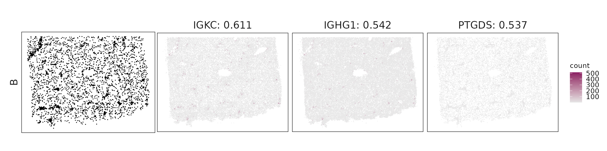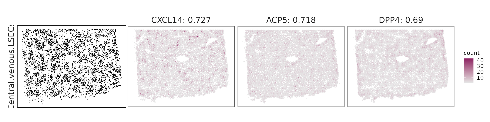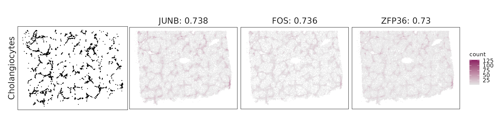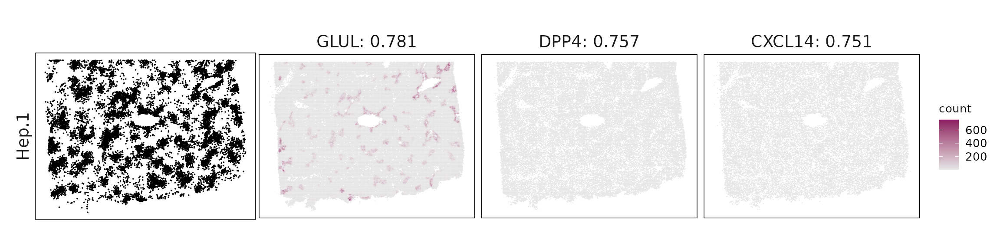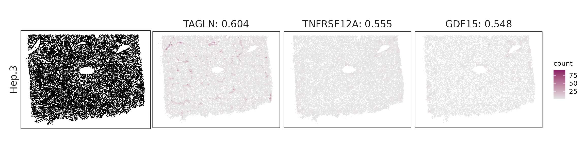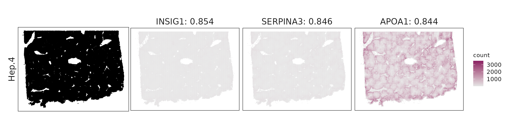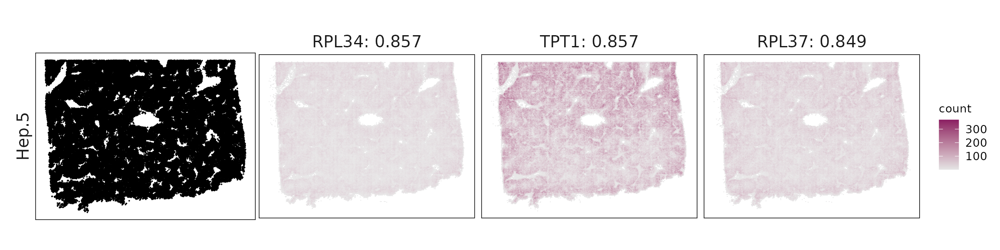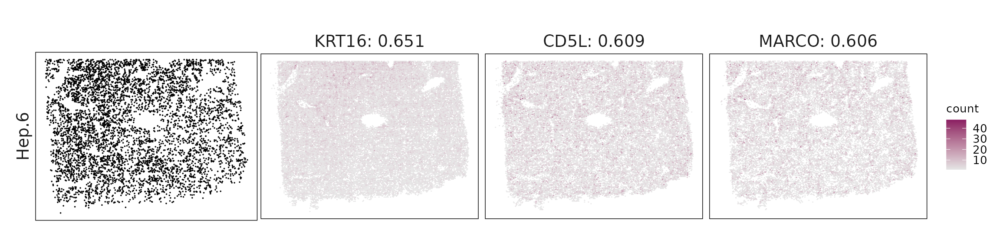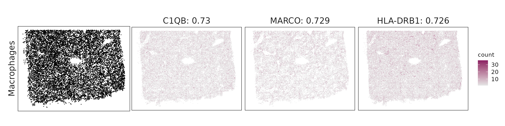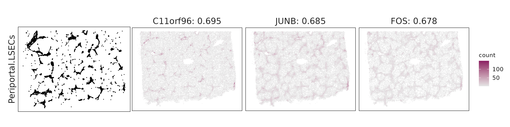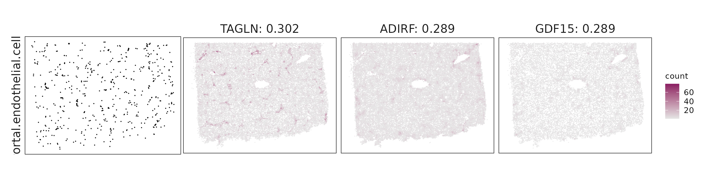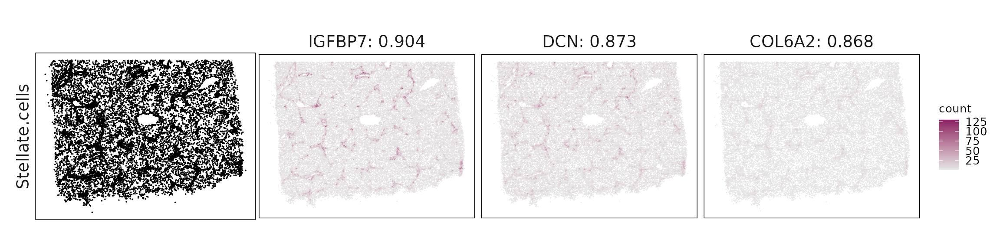
Cluster vector versus marker gene vector
We further examined the quantitative relationship between the cluster vector and its top correlated marker gene vectors. Each scatter plot compares the spatial strength of a marker gene with the corresponding cluster vector across spatial bins. The results show clear positive linear relationships, indicating that the marker genes are spatially aligned with the inferred cluster domain.
plot_lst=list()
for (cl in cluster_names){
obs_cutoff = quantile(obs_corr[, cl], 0.75)
perm_cl<-intersect(row.names(perm_res[perm_res[,cl]<0.05,]),
row.names(obs_corr[obs_corr[, cl]>obs_cutoff,]))
inters<-perm_cl
if (length(inters) >0){
rounded_val<-signif(as.numeric(obs_corr[inters,cl]), digits = 3)
inters_df = as.data.frame(cbind(gene=inters, value=rounded_val))
inters_df$value = as.numeric(inters_df$value)
inters_df<-inters_df[order(inters_df$value, decreasing = TRUE),]
inters_df = inters_df[1:min(3, nrow(inters_df)),]
mk_genes = inters_df$gene
dff = as.data.frame(cbind(sv_lst$cluster_mt[,cl],
sv_lst$gene_mt[,mk_genes]))
colnames(dff) = c("cluster", mk_genes)
dff$vector_id = c(1:nbins)
long_df <- dff %>%
tidyr::pivot_longer(cols = -c(cluster, vector_id), names_to = "gene",
values_to = "vector_count")
long_df$gene = factor(long_df$gene, levels=mk_genes)
p<-ggplot(long_df, aes(x = cluster, y = vector_count, color=gene )) +
geom_point(size=0.01) +
facet_wrap(~gene, scales="free_y", nrow=1) +
labs(x = paste(cl, " cluster vector ", sep=""),
y = "Top3 marker gene vector") +
theme_minimal()+
scale_y_continuous(expand = c(0.01,0.01))+
scale_x_continuous(expand = c(0.01,0.01))+
theme(panel.grid = element_blank(),
legend.position = "none",
strip.text = element_text(size = 12),
axis.line=element_blank(),
axis.text=element_text(size = 11),
axis.ticks=element_line(color="black"),
axis.title=element_text(size = 12),
panel.border =element_rect(colour = "black",
fill=NA, linewidth=0.5)
)
if (length(mk_genes) == 2) {
p <- (p | plot_spacer()) +
plot_layout(widths = c(2, 1))
} else if (length(mk_genes) == 1) {
p <- (p | plot_spacer() | plot_spacer()) +
plot_layout(widths = c(1, 1, 1))
}
plot_lst[[cl]] = p
}
}
combined_plot <- wrap_plots(plot_lst, ncol = 2)
combined_plot 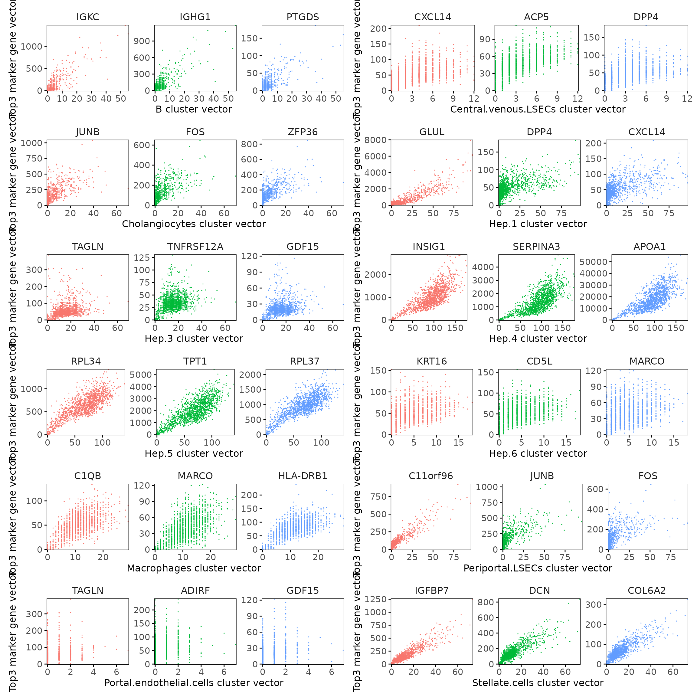
Marker gene summary per cluster
In the correlation-based approach, genes were selected based on two criteria: (1) significant permutation p-values and (2) observed correlation values above the 75th percentile for each cluster. The resulting table lists, for each cluster, the genes with the strongest spatial correlation to that cluster’s distribution, ordered by decreasing correlation coefficient.
It is important to inspect and adjust this cutoff as needed — in some cases, the 75th percentile threshold may still fall below 0.1, which could include weakly correlated genes. A higher cutoff can be applied to ensure that only strongly spatially associated genes are retained.
# correlation appraoch
output_data <- do.call(rbind, lapply(cluster_names, function(cl) {
obs_cutoff = quantile(obs_corr[, cl], 0.75)
perm_cl=intersect(row.names(perm_res[perm_res[,cl]<0.05,]),
row.names(obs_corr[obs_corr[, cl]>obs_cutoff,]))
if (length(perm_cl) == 0){
return(data.frame(Cluster = cl, Genes = " "))
}
sorted_subset = obs_corr[row.names(obs_corr) %in% perm_cl,]
sorted_subset <- sorted_subset[order(-sorted_subset[,cl]), ]
if (cl != "NoSig"){
gene_list <- paste(row.names(sorted_subset), "(", round(sorted_subset[,cl], 2), ")", sep="", collapse=", ")
}else{
gene_list <- paste(row.names(sorted_subset), "", sep="", collapse=", ")
}
return(data.frame(Cluster = cl, Genes = gene_list))
}))
knitr::kable(
output_data,
caption = "Detected marker genes for each cluster by correlation approach in jazzPanda, in decreasing value of observed correlation"
)| Cluster | Genes |
|---|---|
| B | IGKC(0.61), IGHG1(0.54), PTGDS(0.54), IGHG2(0.53) |
| Central.venous.LSECs | CXCL14(0.73), ACP5(0.72), DPP4(0.69), RAMP1(0.62), ITGA6(0.61), SQSTM1(0.61), CD36(0.61), GLUL(0.6), CSTB(0.58), LYVE1(0.58), AHR(0.57), DDIT3(0.56), NEAT1(0.54), GDF15(0.53), FGF2(0.52), ADIRF(0.52), GPX1(0.52), CTSD(0.49) |
| Cholangiocytes | JUNB(0.74), FOS(0.74), ZFP36(0.73), C11orf96(0.73), SPP1(0.72), VIM(0.71), JUN(0.71), IGFBP7(0.7), GADD45B(0.7), SOX4(0.69), LUM(0.69), HSPB1(0.68), JAG1(0.68), DPT(0.68), COL6A2(0.67), THBS1(0.67), BGN(0.67), FGFR2(0.66), HSPA1A(0.66), PDGFRA(0.66), CXCL1(0.66), RGS2(0.66), KRT7(0.66), CCL2(0.66), COL1A2(0.66), DCN(0.66), MGP(0.66), SERPINH1(0.65), PDGFRB(0.65), IGFBP5(0.65), DUSP1(0.65), GSN(0.65), THBS2(0.65), COL3A1(0.65), IER3(0.64), NGFR(0.64), SOX9(0.64), TM4SF1(0.64), COL6A1(0.64), TIMP1(0.64), CCL21(0.63), S100A6(0.63), COL1A1(0.62), CD9(0.62), COL4A2(0.62), ANXA4(0.62), RGS5(0.62), MMP2(0.62), CD24(0.61), NOTCH3(0.61), IL17RB(0.61), NR2F2(0.61), HSP90AA1(0.61), LGALS1(0.6), GPX3(0.6), SLPI(0.6), COL14A1(0.6), COL4A1(0.6), GSTP1(0.59), MRC2(0.59), BTG1(0.59), TNXB(0.58), CDKN1A(0.58), BAG3(0.58), SAA1(0.58), COL6A3(0.58), SERPINA1(0.57) |
| Erthyroid.cells | |
| Hep.1 | GLUL(0.78), DPP4(0.76), CXCL14(0.75), SQSTM1(0.74), RAMP1(0.72), ACP5(0.67), ITGA6(0.65), DDIT3(0.64), CSTB(0.63), GDF15(0.61), AHR(0.61), ADIRF(0.58), FGF2(0.58), GPX1(0.58), CTSD(0.53), G0S2(0.52) |
| Hep.3 | TAGLN(0.6), TNFRSF12A(0.56), GDF15(0.55), CXCL14(0.53), ADIRF(0.53), DDIT3(0.51), RAMP1(0.5), GLUL(0.48) |
| Hep.4 | INSIG1(0.85), SERPINA3(0.85), APOA1(0.84), TTR(0.83), PSD3(0.83), FKBP5(0.83), SERPINA1(0.83), GC(0.83), ZBTB16(0.82), MT1X(0.82), CLU(0.82), AR(0.82), COL18A1(0.82), IGF2(0.82), IL6R(0.81), ADGRA3(0.81), TNFSF10(0.81), VTN(0.81), AZGP1(0.81), HMGN2(0.81), COL27A1(0.81), IL1RAP(0.81), SLPI(0.81), CDH1(0.81), IGF1(0.8), FGG(0.8), SAA1(0.8), FGFR3(0.8), HSP90AA1(0.8), EFNA1(0.79), SAT1(0.79), APOC1(0.79), ARG1(0.78), IL17RB(0.78), PTGES3(0.78), HSD17B2(0.78), VEGFA(0.78), FN1(0.77), SLCO2B1(0.77), HSP90B1(0.77), ATP5F1E(0.77), CALM1(0.77), PPARD(0.77), DUSP1(0.77), CCL15(0.77), NR1H3(0.76), PFN1(0.76), SOD1(0.76), EPHA2(0.76), EGFR(0.76), RPL21(0.76), HSPB1(0.76), S100A10(0.76), IL13RA1(0.76), CD81(0.76), CTNNB1(0.76), CHI3L1(0.76), RARRES2(0.75), ITM2B(0.75), ALCAM(0.75), FASN(0.75), IFITM3(0.75), CD276(0.75), MAPK14(0.75), ERBB3(0.75), ITGA1(0.75), IFNAR2(0.75), CD164(0.75), VEGFB(0.75), MZT2A(0.75), ERBB2(0.75), SRSF2(0.75), RPL37(0.75), CALM2(0.74), HLA-A(0.74), DDC(0.74), FES(0.74), TUBB(0.74), ITGA5(0.74), SELENOP(0.74), ESR1(0.74), RPL34(0.74), CRP(0.74), HMGCS1(0.74), IRF3(0.74), BTF3(0.74), MT2A(0.73), FKBP11(0.73), B2M(0.73), MAP2K1(0.73), BST2(0.73), FZD5(0.73), APOE(0.73), UBA52(0.73), TNFRSF21(0.73), PPIA(0.73), H4C3(0.73), SIGIRR(0.73), ACACB(0.73), HSP90AB1(0.73), LDHA(0.73), DST(0.73), TNFRSF1A(0.73), MET(0.73), CD14(0.72), HDAC1(0.72), ATG10(0.72), CCND1(0.72), ATG5(0.72), CALD1(0.72), PSAP(0.72), SEC61G(0.72), SCG5(0.72), PROX1(0.72), IL11RA(0.72), CALM3(0.72), RAC1(0.72), SLC40A1(0.72), SREBF1(0.72), PIGR(0.72), UBE2C(0.71), RPL22(0.71), EIF5A(0.71), CD63(0.71), AKT1(0.71), POU5F1(0.71), OSM(0.71), STAT3(0.71), RPS4Y1(0.71), IL1RN(0.71), STAT1(0.71), NRG1(0.71), ICAM3(0.71), KRT8(0.71), COL9A3(0.7), RXRA(0.7), SOD2(0.7), TPI1(0.7), RBM47(0.7), FAU(0.7), IGF2R(0.7), ACKR3(0.7), TYK2(0.7), CEACAM1(0.7), CSK(0.7), RACK1(0.7), IL27RA(0.7), HEXB(0.7), LDLR(0.7), HDAC3(0.7), GPER1(0.7), ACVR1B(0.7), PDS5A(0.69), SMO(0.69), CD274(0.69), PLD3(0.69), APP(0.69), NACA(0.69), BECN1(0.69), ATP5F1B(0.69), NFKBIA(0.69), PGK1(0.69), TSC22D1(0.69), ALOX5AP(0.69), XBP1(0.69), VHL(0.69), MSR1(0.69), CASP3(0.69), ITGB5(0.69), SMAD2(0.69), NUSAP1(0.69), CX3CL1(0.69), ABL2(0.69), ST6GAL1(0.68), KRT20(0.68), ISG15(0.68), ARF1(0.68), ACVR1(0.68), CYSTM1(0.68), KRT18(0.68), BRAF(0.68), IFNAR1(0.68), BAX(0.68), LGALS3BP(0.68), PTEN(0.67), EPOR(0.67), SMAD4(0.67), LTBR(0.67), ATG12(0.67), PTK2(0.67), GSK3B(0.67), ADGRG6(0.67), FFAR4(0.67), SQLE(0.67), IL10RB(0.67), ICOSLG(0.67), ATR(0.67), RELA(0.66), IL1A(0.66), BID(0.66), LMNA(0.66), INSR(0.66) |
| Hep.5 | TPT1(0.86), RPL34(0.86), RPL37(0.85), MARCO(0.84), RPL32(0.84), SAT1(0.83), RPL22(0.82), CD5L(0.81), C1QA(0.81), CD163(0.81), C1QB(0.81), C1QC(0.8), ADGRA3(0.8), NACA(0.8), FGG(0.8), PSD3(0.8), MALAT1(0.79), TNFSF10(0.78), HBA1(0.78), ADGRG6(0.78), ITGA1(0.78), ZBTB16(0.78), IL13RA1(0.78), IL6R(0.77), RPS4Y1(0.77), PTEN(0.77), DST(0.77), UBA52(0.76), HBB(0.76), SELENOP(0.76), IL1RAP(0.76), SERPINA1(0.76), TTR(0.76), EGFR(0.76), TYROBP(0.76), FKBP5(0.76), IGF1(0.76), SERPINA3(0.75), MS4A6A(0.75), HSP90B1(0.75), RPL21(0.75), HEXB(0.75), GC(0.75), LYVE1(0.74), IFNAR1(0.74), FCGR3A(0.74), MT1X(0.74), ATP5F1E(0.74), B2M(0.74), CCL15(0.73), ESR1(0.73), S100A10(0.73), APOA1(0.73), IGF2(0.73), ADGRL2(0.73), CLU(0.73), IGF2R(0.73), IFNAR2(0.73), CDH1(0.73), CD47(0.73), KRT16(0.73), ITGB1(0.72), ARG1(0.72), SEC61G(0.72), CALM1(0.72), CD164(0.72), BASP1(0.72), INSIG1(0.72), CD68(0.72), GNLY(0.71), FN1(0.71), SCG5(0.71), BMPR2(0.71), CFD(0.71), APOC1(0.71), VTN(0.71), FCER1G(0.71), RACK1(0.71), AZGP1(0.71), CSF1R(0.71), BTF3(0.71), MSR1(0.71), AR(0.71), ALCAM(0.7), PTGES3(0.7), COL27A1(0.7), FYB1(0.7), VEGFA(0.7), TGFBI(0.7), IL10RA(0.7), MET(0.7), ITGAL(0.69), BECN1(0.69), LDHA(0.69), SORBS1(0.69), NKG7(0.69), IGFBP3(0.69), CNTFR(0.69), CALM2(0.69), ITM2B(0.69), PLAC8(0.69), ABL2(0.69), CD4(0.69), AIF1(0.69), CEACAM1(0.69), IL6ST(0.68), GSK3B(0.68), S100A9(0.68), ATG10(0.68), FGR(0.68), CD52(0.68), NOTCH2(0.68), ATM(0.68), IL18R1(0.68), IFNGR1(0.68), GZMH(0.68), PSAP(0.68), TSHZ2(0.68), IL22RA1(0.68), COL18A1(0.67), HSD17B2(0.67), NR1H3(0.67), CD53(0.67), FZD5(0.67), MAPK14(0.67), CSF3R(0.67), FKBP11(0.67), BRAF(0.67), SLCO2B1(0.67), S100A8(0.67), PRF1(0.67), CLEC12A(0.67), SMAD2(0.67), MERTK(0.67), TUBB(0.67), SLC40A1(0.67), FAS(0.67), ATG12(0.67), KDR(0.66), GZMA(0.66), SOD1(0.66), CD274(0.66), NANOG(0.66), ETV5(0.66), CLEC2B(0.66), MRC1(0.66), ACVR1(0.66), DDX58(0.66), APP(0.66), ATR(0.66), CASP3(0.66), AHI1(0.66), GZMB(0.66), DHRS2(0.66), CCL4(0.66), CASP8(0.66), AKT1(0.65), IFIH1(0.65), ERBB3(0.65), FOXP3(0.65), IL6(0.65), COL15A1(0.65), PROX1(0.65), CD3D(0.65), MZT2A(0.65), CD58(0.65), PTPRC(0.65), CD40(0.65), EPHA7(0.65), IFI44L(0.65), IGF1R(0.65), EZH2(0.65), TLR1(0.65), CLEC5A(0.65), TNFSF13B(0.65), EOMES(0.65), SMAD4(0.65), IAPP(0.65), PDS5A(0.65), CLEC1A(0.65), CCL26(0.65), BST2(0.65), RAC1(0.64), ANGPT1(0.64), COL9A3(0.64), BRCA1(0.64) |
| Hep.6 | KRT16(0.65), CD5L(0.61), MARCO(0.61), C1QB(0.6), CD163(0.6), LYVE1(0.6), TPT1(0.59), S100A9(0.58), HBA1(0.58), MS4A6A(0.58), S100A8(0.58), GNLY(0.58), CXCL14(0.57), HBB(0.57) |
| Macrophages | C1QB(0.73), MARCO(0.73), HLA-DRB1(0.73), CD74(0.72), CD5L(0.72), C1QA(0.72), C1QC(0.71), CD163(0.71), TYROBP(0.69), S100A9(0.69), HLA-DRA(0.69), MS4A6A(0.68), FCGR3A(0.68), S100A8(0.66), HLA-DPA1(0.66), CD44(0.65), CFD(0.65), S100A4(0.65), LYZ(0.65), CSF1R(0.65), HBA1(0.64), COTL1(0.63), BASP1(0.63), KRT16(0.63), CXCR4(0.63), HBB(0.62), LYVE1(0.62), IL10RA(0.62), CD4(0.62), FYB1(0.61), NKG7(0.6), CSF3R(0.6), MS4A4A(0.6), GNLY(0.6), MRC1(0.58), LCN2(0.58) |
| NK.like.cells | |
| Periportal.LSECs | C11orf96(0.69), JUNB(0.69), FOS(0.68), ZFP36(0.67), IGFBP7(0.67), VIM(0.66), DPT(0.66), LUM(0.65), GADD45B(0.65), JAG1(0.64), THBS1(0.64), COL6A2(0.64), JUN(0.62), COL1A2(0.62), CCL2(0.62), MGP(0.62), RGS2(0.61), GSN(0.61), THBS2(0.61), SOX4(0.61), PDGFRB(0.6), DCN(0.6), HSPB1(0.6), TM4SF1(0.6), CCL21(0.6), SPP1(0.6), NOTCH3(0.6), S100A6(0.59), COL1A1(0.58), IGFBP5(0.57) |
| Portal.endothelial.cells | TAGLN(0.3), ADIRF(0.29), GDF15(0.29), TNFRSF12A(0.27), GLUL(0.27) |
| Stellate.cells | IGFBP7(0.9), DCN(0.87), COL6A2(0.87), COL1A1(0.86), THBS1(0.85), COL3A1(0.85), BGN(0.84), COL1A2(0.84), TAGLN(0.83), C11orf96(0.83), COL6A1(0.83), LUM(0.82), VIM(0.81), THBS2(0.8), ACTA2(0.8), DPT(0.78), PDGFRB(0.78), GSN(0.78), MYL9(0.78), S100A6(0.77), CCL2(0.77), TNXB(0.76), CXCL12(0.76), COL4A2(0.76), COL6A3(0.76), JAG1(0.75), COL4A1(0.75), FGFR2(0.75), PDGFRA(0.75), COL14A1(0.75), SOX4(0.75), RGS5(0.75), MMP2(0.74), SPP1(0.74), NOTCH3(0.74), CARMN(0.74), NGFR(0.74), CCL21(0.74), ZFP36(0.74), FOS(0.74), RGS2(0.73), TM4SF1(0.73), JUNB(0.73), MGP(0.73), IER3(0.73), NR2F2(0.73), JUN(0.72), HGF(0.72), TIMP1(0.72), PTGDS(0.72), TPM2(0.72), GADD45B(0.72), KRT7(0.71), MRC2(0.71), ATF3(0.71), MXRA8(0.71), GSTP1(0.71), GPX3(0.71), SOX9(0.71), SERPINH1(0.71), KLF2(0.71), ADGRA2(0.7), ENG(0.7), PXDN(0.7), ITGA9(0.69), CD24(0.69), CRYAB(0.69), COL5A1(0.69), IL32(0.69), IFITM1(0.68), ADGRE5(0.68), CDKN1A(0.68), CD34(0.68), PLAC9(0.68), TGFB3(0.67), IGFBP5(0.67), SPARCL1(0.67), IGFBP6(0.67), CSF1(0.67), FOXF1(0.67), ESAM(0.67), FZD1(0.67), CXCL1(0.67), NDUFA4L2(0.67), HSPG2(0.67), HSPB1(0.66), COL12A1(0.66), CRIP1(0.66), IGKC(0.66), PDGFA(0.66), MARCKSL1(0.65), LGALS1(0.65), EPHA3(0.65), BAG3(0.65), TACSTD2(0.65), TGFBR2(0.65), DUSP1(0.65), HLA-DPA1(0.65), NPR3(0.65), FLT1(0.65), CCL19(0.64), CAV1(0.64), TPM1(0.64), BCL2(0.64), DLL4(0.64), BTG1(0.64), DLL1(0.64), GAS6(0.64), CD9(0.64), LGALS3(0.64), TNFSF12(0.64), IGFBP3(0.64), IL34(0.63), EPCAM(0.63), ANXA2(0.63), SPRY2(0.63), DDR2(0.63), DUSP5(0.62), MMP14(0.62), ANXA4(0.62), VEGFC(0.62), MYH11(0.61), CLEC14A(0.61), KRT19(0.61), LIFR(0.61), PGF(0.6), ITGA3(0.6), PTGIS(0.59), IGHA1(0.59), TNFRSF12A(0.57) |
| T |
limma
We applied the limma framework to identify differentially expressed marker genes across clusters in the healthy liver sample. Count data were normalized using log-transformed counts from the speckle package. A linear model was fitted for each gene with cluster identity as the design factor, and pairwise contrasts were constructed to compare each cluster against all others. Empirical Bayes moderation was applied to stabilize variance estimates, and significant genes were determined using the moderated t-statistics from eBayes.
y <- DGEList(counts_normal_sample[, cluster_info$cell_id])
y$genes <-row.names(counts_normal_sample)
logcounts <- speckle::normCounts(y,log=TRUE,prior.count=0.1)
maxclust <- length(unique(cluster_info$cluster))
grp <- cluster_info$cluster
design <- model.matrix(~0+grp)
colnames(design) <- levels(grp)
mycont <- matrix(NA,ncol=length(levels(grp)),nrow=length(levels(grp)))
rownames(mycont)<-colnames(mycont)<-levels(grp)
diag(mycont)<-1
mycont[upper.tri(mycont)]<- -1/(length(levels(factor(grp)))-1)
mycont[lower.tri(mycont)]<- -1/(length(levels(factor(grp)))-1)
fit <- lmFit(logcounts,design)
fit.cont <- contrasts.fit(fit,contrasts=mycont)
fit.cont <- eBayes(fit.cont,trend=TRUE,robust=TRUE)
limma_dt<-decideTests(fit.cont)
saveRDS(fit.cont, here(gdata,paste0(data_nm, "_fit_cont_obj.Rds")))The resulting figure shows the top 10 marker genes per cluster identified by limma. The detected markers align closely with known liver biology:
fit.cont = readRDS(here(gdata,paste0(data_nm, "_fit_cont_obj.Rds")))
limma_dt <- decideTests(fit.cont)
summary(limma_dt) B Central.venous.LSECs Cholangiocytes Erthyroid.cells Hep.1 Hep.3
Down 339 283 316 246 757 212
NotSig 335 330 267 503 62 153
Up 326 387 417 251 181 635
Hep.4 Hep.5 Hep.6 Macrophages NK.like.cells Periportal.LSECs
Down 645 683 939 348 297 567
NotSig 38 64 10 200 290 178
Up 317 253 51 452 413 255
Portal.endothelial.cells Stellate.cells T
Down 336 649 289
NotSig 543 81 105
Up 121 270 606top_markers <- lapply(cluster_names, function(cl) {
tt <- topTable(fit.cont,
coef = cl,
number = Inf,
adjust.method = "BH",
sort.by = "P")
tt <- tt[order(tt$adj.P.Val, -abs(tt$logFC)), ]
tt$contrast <- cl
tt$gene <- rownames(tt)
head(tt, 10)
})
# Combine into one data.frame
top_markers_df <- bind_rows(top_markers) %>%
select(contrast, gene, logFC, adj.P.Val)
p1<- DotPlot(seu, features = unique(top_markers_df$gene)) +
scale_colour_gradient(low = "white", high = "red") +
coord_flip()+
theme(axis.text.x = element_text(angle = 45, hjust = 1, vjust = 1))+
labs(title = "Top 10 marker genes (limma)", x="", y="")
p1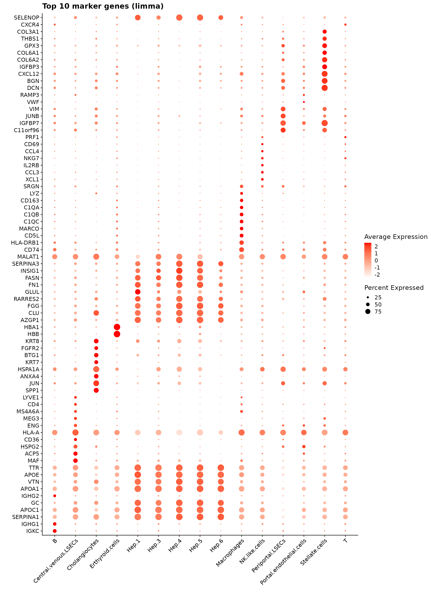
Wilcoxon Rank Sum Test
The FindAllMarkers function applies a Wilcoxon Rank Sum test to detect genes with cluster-specific expression shifts. Only positive markers (upregulated genes) were retained using a log fold-change threshold of 0.1.
hln_seu=CreateSeuratObject(counts = counts_normal_sample[, cluster_info$cell_id], project = "hl_normal")
Idents(hln_seu) = cluster_info[match(colnames(hln_seu),
cluster_info$cell_id),"cluster"]
hln_seu = NormalizeData(hln_seu, verbose = FALSE,
normalization.method = "LogNormalize")
hln_seu = FindVariableFeatures(hln_seu, selection.method = "vst",
nfeatures = 1000, verbose = FALSE)
hln_seu=ScaleData(hln_seu, verbose = FALSE)
set.seed(989)
# print(ElbowPlot(hln_seu, ndims = 50))
hln_seu <- RunPCA(hln_seu, features = row.names(hln_seu),
npcs = 30, verbose = FALSE)
hln_seu <- RunUMAP(object = hln_seu, dims = 1:15)
seu_markers <- FindAllMarkers(hln_seu, only.pos = TRUE,logfc.threshold = 0.1)
saveRDS(seu_markers, here(gdata,paste0(data_nm, "_seu_markers.Rds")))
saveRDS(hln_seu, here(gdata,paste0(data_nm, "_seu.Rds")))FM_result= readRDS(here(gdata,paste0(data_nm, "_seu_markers.Rds")))
table(FM_result$cluster)
B Central.venous.LSECs Cholangiocytes
526 540 559
Erthyroid.cells Hep.1 Hep.3
290 95 634
Hep.4 Hep.5 Hep.6
70 44 67
Macrophages NK.like.cells Periportal.LSECs
644 499 745
Portal.endothelial.cells Stellate.cells T
320 660 706 FM_result$cluster <- factor(FM_result$cluster,
levels = cluster_names)
top_mg <- FM_result %>%
group_by(cluster) %>%
arrange(desc(avg_log2FC), .by_group = TRUE) %>%
slice_max(order_by = avg_log2FC, n = 10) %>%
select(cluster, gene, avg_log2FC)
p1<-DotPlot(seu, features = unique(top_mg$gene)) +
scale_colour_gradient(low = "white", high = "red") +
coord_flip()+
theme(axis.text.x = element_text(angle = 45, hjust = 1, vjust = 1))+
labs(title = "Top 10 marker genes (WRS)", x="", y="")
p1
# Combine into a new dataframe for LaTeX output
# output_data <- do.call(rbind, lapply(cluster_names, function(cl) {
# subset <- top_mg[top_mg$cluster == cl, ]
# sorted_subset <- subset[order(-subset$avg_log2FC), ]
# gene_list <- paste(sorted_subset$gene, "(", round(sorted_subset$avg_log2FC, 2), ")", sep="", collapse=", ")
#
# return(data.frame(Cluster = cl, Genes = gene_list))
# }))
# latex_table <- xtable(output_data, caption="Detected marker genes for each cluster by FindMarkers")
# print.xtable(latex_table, include.rownames = FALSE, hline.after = c(-1, 0, nrow(output_data)), comment = FALSE)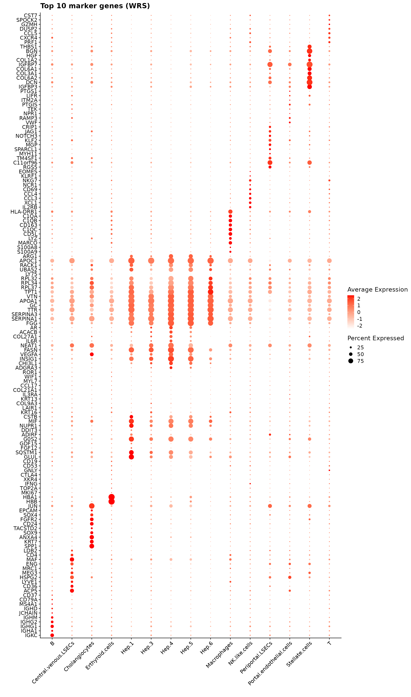
Comparison of marker gene detection methods
Cumulative rank plot
We compared the performance of different marker detection methods—jazzPanda (correlation-based and generalized linear model variants), limma, and Seurat’s Wilcoxon Rank Sum test—by evaluating the cumulative average spatial correlation between ranked marker genes and their corresponding target clusters at the spatial vector level.
Across most cell types, particularly spatially well-organized populations such as hepatocyte subclusters and LSEC cells, jazzPanda consistently achieved higher spatial concordance among top-ranked genes. This is reflected by the steeper initial rise in cumulative correlation curves for both jazzPanda variants, indicating that genes prioritized by jazzPanda tend to exhibit stronger spatial alignment with cluster structure. In contrast, limma and the Wilcoxon Rank Sum test generally showed flatter early curves, suggesting that while they identify differentially expressed genes, these genes are less consistently spatially localized. Overall, these results demonstrate that jazzPanda more effectively prioritizes markers with strong spatial structure, particularly in tissues with pronounced spatial organization.
plot_lst=list()
cor_M = cor(sv_lst$gene_mt,
sv_lst$cluster_mt[, cluster_names],
method = "spearman")
Idents(seu)=cluster_info$cluster[match(colnames(seu),
cluster_info$cell_id)]
for (cl in cluster_names){
fm_cl=FindMarkers(seu, ident.1 = cl, only.pos = TRUE,
logfc.threshold = 0.1)
fm_cl = fm_cl[fm_cl$p_val_adj<0.05, ]
fm_cl = fm_cl[order(fm_cl$avg_log2FC, decreasing = TRUE),]
to_plot_fm =row.names(fm_cl)
if (length(to_plot_fm)>0){
FM_pt =FM_pt = data.frame("name"=to_plot_fm,"rk"= 1:length(to_plot_fm),
"y"= get_cmr_ma(to_plot_fm,cor_M = cor_M, cl = cl),
"type"="Wilcoxon Rank Sum Test")
}else{
FM_pt <- data.frame(name = character(0), rk = integer(0),
y= numeric(0), type = character(0))
}
limma_cl<-topTable(fit.cont,coef=cl,p.value = 0.05, n=Inf, sort.by = "p")
limma_cl = limma_cl[limma_cl$logFC>0, ]
to_plot_lm = row.names(limma_cl)
if (length(to_plot_lm)>0){
limma_pt = data.frame("name"=to_plot_lm,"rk"= 1:length(to_plot_lm),
"y"= get_cmr_ma(to_plot_lm,cor_M = cor_M, cl = cl),
"type"="limma")
}else{
limma_pt <- data.frame(name = character(0), rk = integer(0),
y= numeric(0), type = character(0))
}
obs_cutoff = quantile(obs_corr[, cl], 0.75)
perm_cl=intersect(row.names(perm_res[perm_res[,cl]<0.05,]),
row.names(obs_corr[obs_corr[, cl]>obs_cutoff,]))
if (length(perm_cl) > 0) {
rounded_val=signif(as.numeric(obs_corr[perm_cl,cl]), digits = 3)
roudned_pval=signif(as.numeric(perm_res[perm_cl,cl]), digits = 3)
perm_sorted = as.data.frame(cbind(gene=perm_cl, value=rounded_val, pval=roudned_pval))
perm_sorted$value = as.numeric(perm_sorted$value)
perm_sorted$pval = as.numeric(perm_sorted$pval)
perm_sorted=perm_sorted[order(-perm_sorted$pval,
perm_sorted$value,
decreasing = TRUE),]
corr_pt = data.frame("name"=perm_sorted$gene,"rk"= 1:length(perm_sorted$gene),
"y"= get_cmr_ma(perm_sorted$gene,cor_M = cor_M, cl = cl),
"type"="jazzPanda-correlation")
} else {
corr_pt <-data.frame(name = character(0), rk = integer(0),
y= numeric(0), type = character(0))
}
lasso_sig = jazzPanda_res[jazzPanda_res$top_cluster==cl,]
if (nrow(lasso_sig) > 0) {
lasso_sig <- lasso_sig[order(lasso_sig$glm_coef, decreasing = TRUE), ]
lasso_pt = data.frame("name"=lasso_sig$gene,"rk"= 1:nrow(lasso_sig),
"y"= get_cmr_ma(lasso_sig$gene,cor_M = cor_M, cl = cl),
"type"="jazzPanda-glm")
} else {
lasso_pt <- data.frame(name = character(0), rk = integer(0),
y= numeric(0), type = character(0))
}
data_lst = rbind(limma_pt, FM_pt,corr_pt,lasso_pt)
data_lst$type <- factor(data_lst$type,
levels = c("jazzPanda-correlation" ,
"jazzPanda-glm",
"limma", "Wilcoxon Rank Sum Test"))
data_lst$rk = as.numeric(data_lst$rk)
cl = sub(cl, pattern = ".cells", replacement="")
p <-ggplot(data_lst, aes(x = rk, y = y, color = type)) +
geom_step(size = 0.8) + # type = "s"
scale_color_manual(values = c("jazzPanda-correlation" = "orange",
"jazzPanda-glm" = "red",
"limma" = "black",
"Wilcoxon Rank Sum Test" = "blue")) +
scale_x_continuous(limits = c(0, 50))+
labs(title = paste(cl, "cells"), x = "Rank of marker genes",
y = "Cumulative average correlation",
color = NULL) +
theme_classic(base_size = 12) +
theme(plot.title = element_text(hjust = 0.5),
axis.line = element_blank(),
panel.border = element_rect(color = "black",
fill = NA, linewidth = 1),
legend.position = "inside",
legend.position.inside = c(0.98, 0.02),
legend.justification = c("right", "bottom"),
legend.background = element_rect(color = "black",
fill = "white", linewidth = 0.5),
legend.box.background = element_rect(color = "black",
linewidth = 0.5)
)
plot_lst[[cl]] <- p
}
combined_plot <- wrap_plots(plot_lst, ncol = 3)
combined_plot 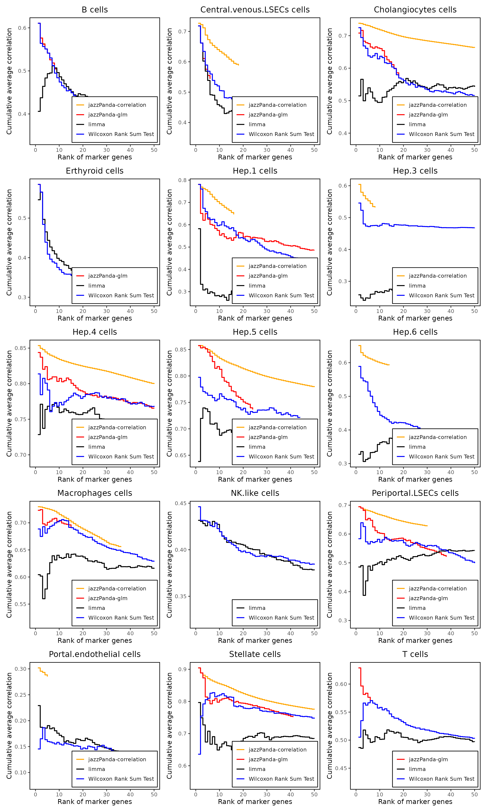
upset plot
We further visualized the overlap between marker genes detected by the four methods using UpSet plots for each cluster. While there is partial overlap across methods, jazzPanda (both linear modelling approach and correlation) identifies distinct sets of genes that are highly spatially specific but can be missed by non-spatial approaches. Clusters such as hepatocytes and endothelial subsets show many unique jazzPanda signatures, whereas immune clusters display greater overlap across methods due to their more diffuse spatial distributions.
plot_lst=list()
for (cl in cluster_names){
findM_sig <- FM_result[FM_result$cluster==cl & FM_result$p_val_adj<0.05,"gene"]
limma_sig <- row.names(limma_dt[limma_dt[,cl]==1,])
lasso_cl <- jazzPanda_res[jazzPanda_res$top_cluster==cl, "gene"]
obs_cutoff = quantile(obs_corr[, cl], 0.75)
perm_cl=intersect(row.names(perm_res[perm_res[,cl]<0.05,]),
row.names(obs_corr[obs_corr[, cl]>obs_cutoff,]))
df_mt <- as.data.frame(matrix(FALSE,nrow=nrow(jazzPanda_res),ncol=4))
row.names(df_mt) <- jazzPanda_res$gene
colnames(df_mt) <- c("jazzPanda-glm",
"jazzPanda-correlation",
"Wilcoxon Rank Sum Test","limma")
df_mt[findM_sig,"Wilcoxon Rank Sum Test"] <- TRUE
df_mt[limma_sig,"limma"] <- TRUE
df_mt[lasso_cl,"jazzPanda-glm"] <- TRUE
df_mt[perm_cl,"jazzPanda-correlation"] <- TRUE
df_mt$gene_name <- row.names(df_mt)
p = plot(upset(df_mt,
intersect=c("Wilcoxon Rank Sum Test", "limma",
"jazzPanda-correlation","jazzPanda-glm"),
wrap=TRUE, keep_empty_groups= FALSE, name="",
stripes='white',
sort_intersections_by ="cardinality",
sort_sets= FALSE,min_degree=1,
set_sizes =(
upset_set_size()
+ theme(axis.title= element_blank(),
axis.ticks.y = element_blank(),
axis.text.y = element_blank())),
sort_intersections= "descending", warn_when_converting=FALSE,
warn_when_dropping_groups=TRUE,encode_sets=TRUE,
width_ratio=0.3, height_ratio=1/4)+
ggtitle(paste(cl,"cells"))+
ggtitle(cl)+
theme(plot.title = element_text( size=15))
)
plot_lst[[cl]] <- p
}
combined_plot <- wrap_plots(plot_lst, ncol = 3)
combined_plot 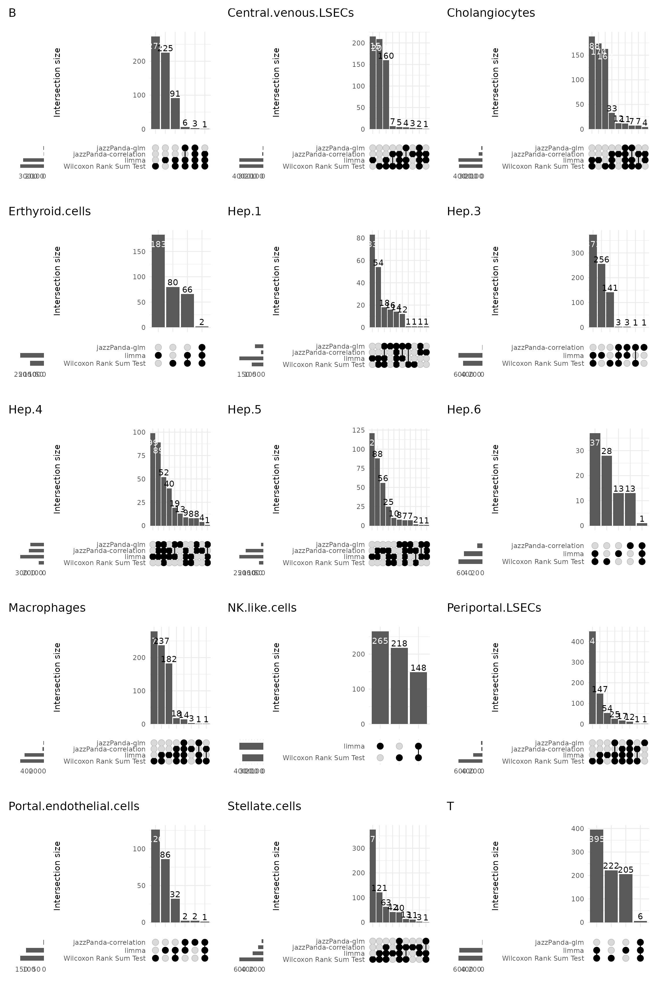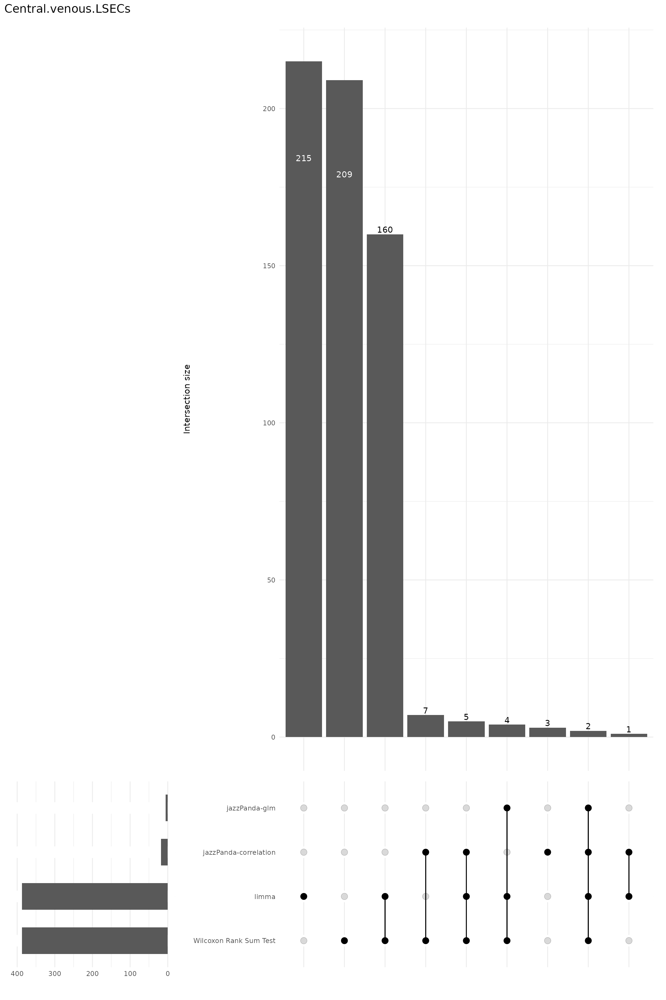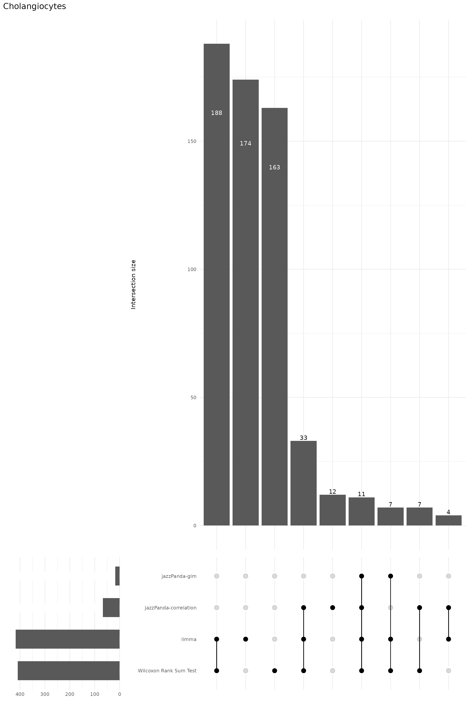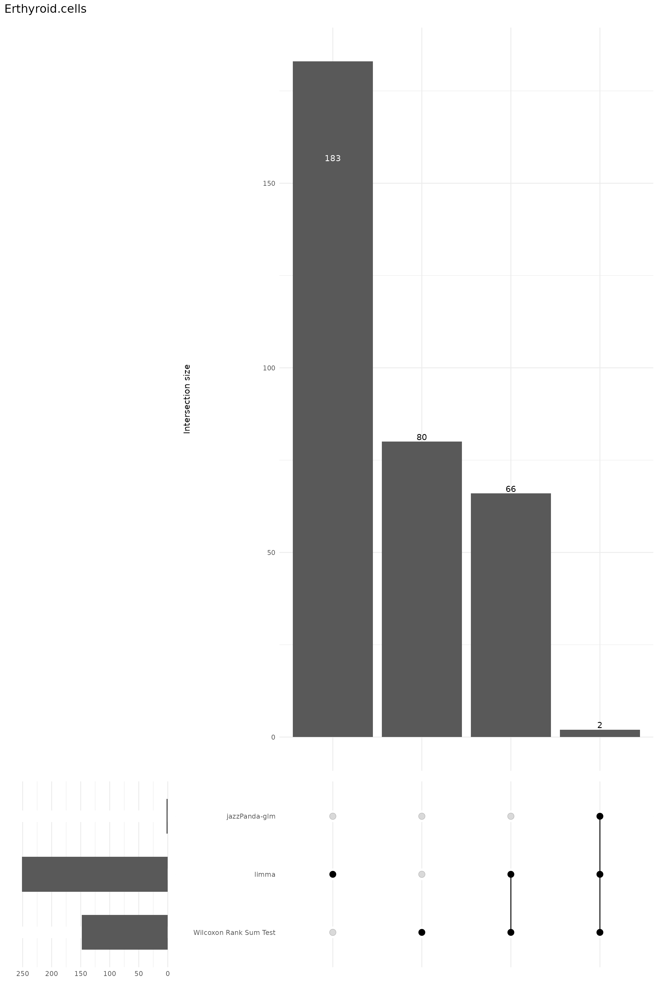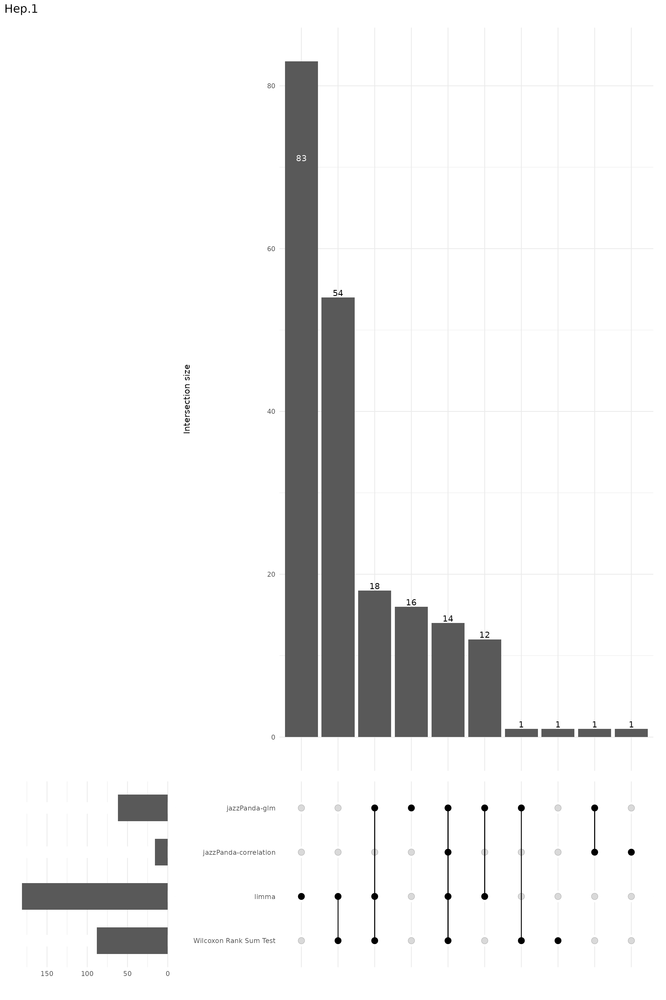 

Together, these comparisons highlight that jazzPanda captures spatially enriched marker genes that complement traditional DE-based methods, providing a more nuanced view of cell-type–specific spatial organization in the liver.
sessionInfo()R version 4.5.1 (2025-06-13)
Platform: x86_64-pc-linux-gnu
Running under: Red Hat Enterprise Linux 9.3 (Plow)
Matrix products: default
BLAS: /stornext/System/data/software/rhel/9/base/tools/R/4.5.1/lib64/R/lib/libRblas.so
LAPACK: /stornext/System/data/software/rhel/9/base/tools/R/4.5.1/lib64/R/lib/libRlapack.so; LAPACK version 3.12.1
locale:
[1] LC_CTYPE=en_AU.UTF-8 LC_NUMERIC=C
[3] LC_TIME=en_AU.UTF-8 LC_COLLATE=en_AU.UTF-8
[5] LC_MONETARY=en_AU.UTF-8 LC_MESSAGES=en_AU.UTF-8
[7] LC_PAPER=en_AU.UTF-8 LC_NAME=C
[9] LC_ADDRESS=C LC_TELEPHONE=C
[11] LC_MEASUREMENT=en_AU.UTF-8 LC_IDENTIFICATION=C
time zone: Australia/Melbourne
tzcode source: system (glibc)
attached base packages:
[1] stats4 stats graphics grDevices utils datasets methods
[8] base
other attached packages:
[1] dotenv_1.0.3 corrplot_0.95
[3] xtable_1.8-4 here_1.0.1
[5] limma_3.64.1 RColorBrewer_1.1-3
[7] patchwork_1.3.1 gridExtra_2.3
[9] ggrepel_0.9.6 ComplexUpset_1.3.3
[11] caret_7.0-1 lattice_0.22-7
[13] glmnet_4.1-10 Matrix_1.7-3
[15] tidyr_1.3.1 dplyr_1.1.4
[17] data.table_1.17.8 ggplot2_3.5.2
[19] Seurat_5.3.0 SeuratObject_5.1.0
[21] sp_2.2-0 SpatialExperiment_1.18.1
[23] SingleCellExperiment_1.30.1 SummarizedExperiment_1.38.1
[25] Biobase_2.68.0 GenomicRanges_1.60.0
[27] GenomeInfoDb_1.44.2 IRanges_2.42.0
[29] S4Vectors_0.46.0 BiocGenerics_0.54.0
[31] generics_0.1.4 MatrixGenerics_1.20.0
[33] matrixStats_1.5.0 jazzPanda_0.2.4
loaded via a namespace (and not attached):
[1] RcppAnnoy_0.0.22 splines_4.5.1 later_1.4.2
[4] tibble_3.3.0 polyclip_1.10-7 hardhat_1.4.2
[7] pROC_1.19.0.1 rpart_4.1.24 fastDummies_1.7.5
[10] lifecycle_1.0.4 rprojroot_2.1.0 globals_0.18.0
[13] MASS_7.3-65 magrittr_2.0.3 plotly_4.11.0
[16] sass_0.4.10 rmarkdown_2.29 jquerylib_0.1.4
[19] yaml_2.3.10 httpuv_1.6.16 sctransform_0.4.2
[22] spam_2.11-1 spatstat.sparse_3.1-0 reticulate_1.43.0
[25] cowplot_1.2.0 pbapply_1.7-4 lubridate_1.9.4
[28] abind_1.4-8 Rtsne_0.17 presto_1.0.0
[31] purrr_1.1.0 BumpyMatrix_1.16.0 nnet_7.3-20
[34] ipred_0.9-15 lava_1.8.1 GenomeInfoDbData_1.2.14
[37] irlba_2.3.5.1 listenv_0.9.1 spatstat.utils_3.1-5
[40] goftest_1.2-3 RSpectra_0.16-2 spatstat.random_3.4-1
[43] fitdistrplus_1.2-4 parallelly_1.45.1 codetools_0.2-20
[46] DelayedArray_0.34.1 tidyselect_1.2.1 shape_1.4.6.1
[49] UCSC.utils_1.4.0 farver_2.1.2 spatstat.explore_3.5-2
[52] jsonlite_2.0.0 progressr_0.15.1 ggridges_0.5.6
[55] survival_3.8-3 iterators_1.0.14 systemfonts_1.3.1
[58] foreach_1.5.2 tools_4.5.1 ragg_1.5.0
[61] ica_1.0-3 Rcpp_1.1.0 glue_1.8.0
[64] prodlim_2025.04.28 SparseArray_1.8.1 xfun_0.52
[67] withr_3.0.2 fastmap_1.2.0 digest_0.6.37
[70] timechange_0.3.0 R6_2.6.1 mime_0.13
[73] textshaping_1.0.1 colorspace_2.1-1 scattermore_1.2
[76] tensor_1.5.1 spatstat.data_3.1-8 hexbin_1.28.5
[79] recipes_1.3.1 class_7.3-23 httr_1.4.7
[82] htmlwidgets_1.6.4 S4Arrays_1.8.1 uwot_0.2.3
[85] ModelMetrics_1.2.2.2 pkgconfig_2.0.3 gtable_0.3.6
[88] timeDate_4041.110 lmtest_0.9-40 XVector_0.48.0
[91] htmltools_0.5.8.1 dotCall64_1.2 scales_1.4.0
[94] png_0.1-8 gower_1.0.2 spatstat.univar_3.1-4
[97] knitr_1.50 reshape2_1.4.4 rjson_0.2.23
[100] nlme_3.1-168 cachem_1.1.0 zoo_1.8-14
[103] stringr_1.5.1 KernSmooth_2.23-26 parallel_4.5.1
[106] miniUI_0.1.2 pillar_1.11.0 grid_4.5.1
[109] vctrs_0.6.5 RANN_2.6.2 promises_1.3.3
[112] cluster_2.1.8.1 evaluate_1.0.4 magick_2.8.7
[115] cli_3.6.5 compiler_4.5.1 rlang_1.1.6
[118] crayon_1.5.3 future.apply_1.20.0 labeling_0.4.3
[121] plyr_1.8.9 stringi_1.8.7 viridisLite_0.4.2
[124] deldir_2.0-4 BiocParallel_1.42.1 lazyeval_0.2.2
[127] spatstat.geom_3.5-0 RcppHNSW_0.6.0 future_1.67.0
[130] statmod_1.5.0 shiny_1.11.1 ROCR_1.0-11
[133] igraph_2.1.4 bslib_0.9.0